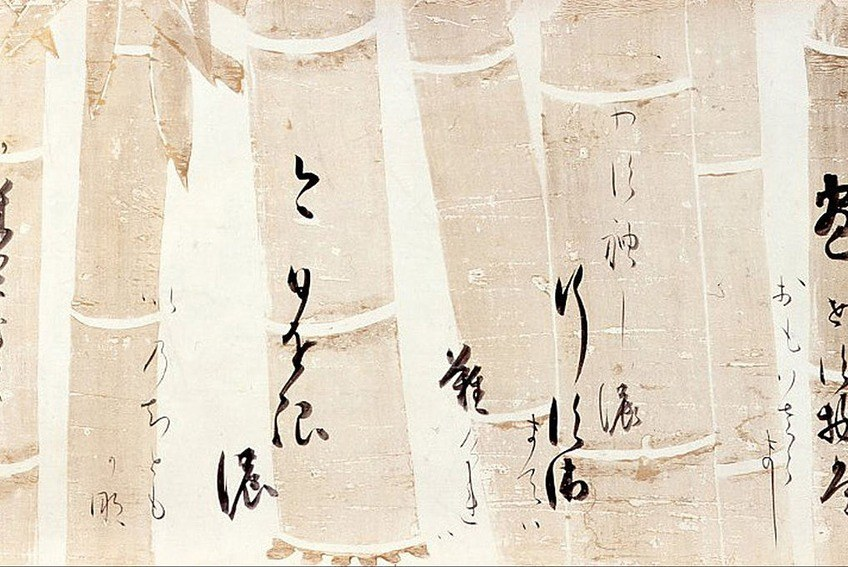
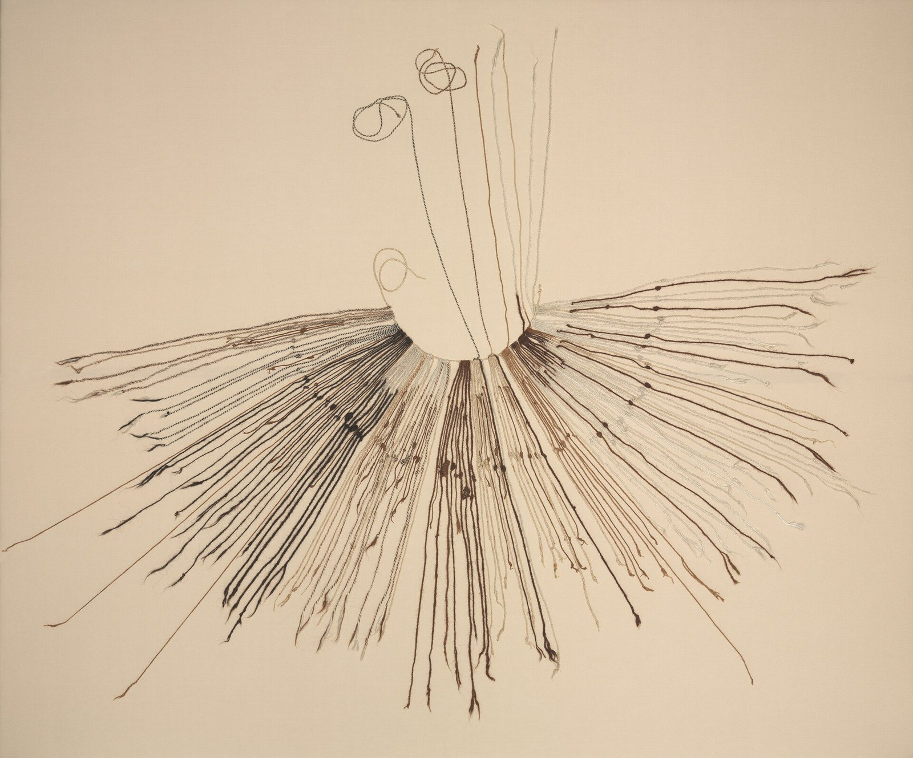

第25回
綱に掛けた何匹もの鯉が、風を受けて、同じ向きにふくらんでいる。
Suicasmo（2017年、栃木市の鯉のぼり）／CC BY-SA 4.0／Wikimedia Commons（横長に切り出した）
前回は、小さな正方形の「辺」と「面積」を使って、発散と回転を作った。この回は、その計算を曲がった線と曲がった面の上に広げる。曲線に沿って場を足し合わせるのが線積分（針金の質量、力のする仕事）、曲面の上で場を足し合わせるのが面積分（曲面の面積、曲面を通りぬける流れの量）である。どちらも「細かく刻んで、小片ごとに掛けて、足して、極限をとる」という第10回・第13回のリーマン和から、省略せずに導く。
第1回から続く約束どおり、新しい記号は緑色の枠（記号）で「①読み方 ②日本語での意味 ③省略していない書き方 ④どこで出会うか」を書く。この回の主役は $\int_C$（線積分）、$\oint$（閉曲線の線積分）、$d\boldsymbol r$、$ds$、$dS$、$\iint_S$（面積分）の6つである。省略した書き方を使うときは、3.4 と 5.5 の「省略の段階」の表に戻れる。
各節は、「なぜ必要か → 定義 → 数値で一度手を動かす → 導出 → 確かめ → よくある誤解」の順に進む。高校・1年で習った内容も、短く一度は書く。覚えている部分は飛ばしてよい。
この回は、前の回の道具を3つ組み合わせる。①リーマン和と置換積分（第10回）、②二重積分とヤコビアン（第13回）、③勾配と回転（第23・24回）。
最初に、この回で新しく説明する記号と、前の回で説明済みの記号を分けて並べる。右の列の「→」で説明のある場所へ飛べる。
| 記号 | 読み方 | ざっくりした意味 | 説明 |
|---|---|---|---|
| $C$、$\boldsymbol r(t)$（曲線とそのパラメータ表示）、$[a,b]$ 上の $t$ | シー、アール・オブ・ティー | 曲線 $C$ を「時刻 $t$ の位置」の列として表す式 | →1.2 |
| $\boldsymbol r'(t)$（接ベクトル、速度） | アール・プライム・ティー | 位置 $\boldsymbol r(t)$ を $t$ で微分したベクトル。曲線に接する | →1.3 |
| $ds$、$L$（弧長要素、弧長） | ディー・エス、エル | 曲線の小片の長さ、曲線全体の長さ | →1.4 |
| 曲線の向き | むき | $t$ が増える向き。逆向きにたどる曲線を $-C$ と書く | →1.5 |
| $\displaystyle\int_Cf\,ds$（スカラー場の線積分） | インテグラル・シー・エフ・ディー・エス | 曲線の上で、小片の長さ × 場の値 を足し合わせた数 | →2.2 |
| $d\boldsymbol r$（変位ベクトルの小片） | ディー・アール | 曲線の上を少し進んだときの変位のベクトル。$\boldsymbol r'(t)\,dt$ | →3.2 |
| $\displaystyle\int_C\boldsymbol F\cdot d\boldsymbol r$（ベクトル場の線積分） | インテグラル・シー・エフ・ドット・ディー・アール | 曲線に沿って場が押す量（仕事）を足し合わせた数 | →3.2 |
| 線積分の書き方の省略の段階（S0〜S3） | ― | $\int_a^b\boldsymbol F(\boldsymbol r(t))\cdot\boldsymbol r'(t)\,dt$ から $\int_CP\,dx+Q\,dy+R\,dz$ までの4段 | →3.4 |
| $\displaystyle\oint_C$（閉曲線の線積分） | ラウンド・インテグラル・シー | 始点と終点が一致する曲線を一周する線積分 | →3.5 |
| 保存場 | ほぞんば | $\boldsymbol F=\nabla\phi$ となる $\phi$ がある場。線積分が端点だけで決まる | →3.6 |
| $\boldsymbol r(u,v)$（曲面のパラメータ表示）、$\boldsymbol r_u,\boldsymbol r_v$ | アール・ユー・ブイ、アール・ユー、アール・ブイ | 曲面を2つのパラメータで表す式、とその偏微分（曲面に接する2本のベクトル） | →4.2 |
| $dS$（面積要素） | ディー・エス | 曲面の小片の面積。$\|\boldsymbol r_u\times\boldsymbol r_v\|\,du\,dv$ | →4.3 |
| 曲面の向き、$\boldsymbol n$（単位法線ベクトル） | むき | 曲面のどちら側を「表」とするかの選び方 | →4.6 |
| $\displaystyle\iint_Sf\,dS$（スカラー場の面積分） | ダブル・インテグラル・エス・エフ・ディー・エス | 曲面の上で、小片の面積 × 場の値 を足し合わせた数 | →5.1 |
| $d\boldsymbol S=\boldsymbol n\,dS$、$\displaystyle\iint_S\boldsymbol F\cdot\boldsymbol n\,dS$（流束） | ディー・エス（太字）、フラックス | 曲面を向きの側へ通りぬける量。法線成分 × 面積 の和 | →5.2 |
| 面積分の書き方の省略の段階（S0〜S3） | ― | $\iint_D\boldsymbol F\cdot(\boldsymbol r_u\times\boldsymbol r_v)\,du\,dv$ から $\iint_S\boldsymbol F\cdot d\boldsymbol S$ までの段 | →5.5 |
| 記号 | 意味 | 初出 |
|---|---|---|
| $:=$、$=$、$\approx$ | 左の名前を右の式で決める／等しい／ほぼ等しい | 第1回 2.2、2.1、2.4 |
| 多変数関数、定義域 | 入力が複数の関数、入力の集まり | 第3回 6.1、第3回 |
| 総和 $\sum$ | 足し合わせ | 第4回 |
| 太字ベクトル $\boldsymbol a$、成分 $a_i$、転置 $\mathsf T$、ノルム $\|\boldsymbol a\|$、単位ベクトル | 数の組、その中の数、縦横を入れ替える、長さ、長さ1のベクトル | 第5回、成分、転置、ノルム、単位ベクトル |
| 内積 $\boldsymbol a\cdot\boldsymbol b$、外積 $\boldsymbol a\times\boldsymbol b$ | 成分どうしを掛けて足した数／両方に直角で、長さが平行四辺形の面積のベクトル | 第5回 7.2、9.2 |
| $\lim$、$o(\cdot)$ | 極限、「それより速く0に近づく」 | 第6回、第6回 |
| $\Delta x$、導関数 $f'(x)$、1次近似 | 変化量、接線の傾き、接線で置き換える近似 | 第7回、$f'$、第8回 |
| 分割、リーマン和、定積分 $\int_a^b$、微積分学の基本定理、置換積分 | 区間を刻む、刻んだ和、その極限、微分と積分の逆関係、変数の置き換え | 分割、リーマン和、定積分、基本定理、置換積分 |
| 偏微分 $\dfrac{\partial f}{\partial x}$、$f_x$ | 他の変数を止めて1つだけ動かした微分 | 第11回 2.1、3.1 |
| 連鎖律 | 合成の微分 | 第12回 |
| 二重積分、領域、$dA$、累次積分、極座標、ヤコビアン、球座標 | 面積の積分、積分する範囲、面積要素、内側から順に積分、$(r,\theta)$、面積の拡大率、$(r,\theta,\varphi)$ | 二重積分、領域、$dA$、累次、極座標、ヤコビアン、球座標 |
| 行列式 $\det$ | 2×2 では「左上×右下 − 右上×左下」 | 第18回 |
| 場、スカラー場、ベクトル場、位置ベクトル $\boldsymbol r$ | 点ごとに数／ベクトルが決まっているもの | 第23回 1.1、スカラー場、ベクトル場、位置ベクトル |
| $\nabla$、勾配 $\nabla f$、法線ベクトル、ポテンシャル $\phi$ | 偏微分を並べる命令、いちばん増える向き、面に直角なベクトル、元のスカラー場 | $\nabla$、勾配、法線、ポテンシャル |
| 発散 $\nabla\cdot\boldsymbol v$、回転 $\nabla\times\boldsymbol v$ | 湧き出し（数）、渦（ベクトル） | 第24回 2.1、3.1 |
PHOTO 1｜現実
らせんを一周するごとに、高さが少しずつ上がっていく。
Colin（2012年、バチカン美術館のらせん階段）／CC BY-SA 3.0／Wikimedia Commons（縮小した）
MITATE 1｜見立て

筆の先が通った道すじが、そのまま一本の線として残る。
本阿弥光悦の和歌の書（Google Art Project 経由。年代は Commons に「1600/1700」とある）／Public domain／Wikimedia Commons（一部を切り出した）
第10回の定積分 $\int_a^b$ は、$x$ 軸の上のまっすぐな区間を刻んで足し合わせるものだった。第13回の二重積分 $\iint_D$ は、$xy$ 平面の上の平らな領域を刻んで足し合わせるものだった。ところが、工学で足し合わせたいものは、まっすぐでも平らでもないことが多い。
これらを計算するには、まず曲がった線や面を、積分できる形の式で書く必要がある。この節は、線（曲線）から始める。曲面は 4 で扱う。
方針は、第12回の連鎖律で何度も使った「中間変数」と同じ発想である。曲がった線の上の点を、1つの数 $t$ から決まる位置として書く。すると、曲がった線の上の積分が、$t$ についての普通の定積分に変わる。
平面の中を動く点を考える。時刻 $t$ に位置 $(x(t),y(t))$ にいるなら、$t$ を $a$ から $b$ まで動かしたときに点が通る跡が、1本の曲線になる。この「時刻から位置を返す関数」を、そのまま曲線の定義にする。
①読み方：「シー」（曲線の名前）、「アール・オブ・ティー」（位置ベクトル）。$t$ を「パラメータ」（媒介変数）と呼ぶ。
②日本語での意味：区間 $[a,b]$ の各 $t$ に空間（または平面）の点を1つ決めるベクトル値の関数 $\boldsymbol r$ のこと。$t$ を $a$ から $b$ まで動かして、点 $\boldsymbol r(t)$ が通る跡を曲線 $C$ と呼ぶ。「時刻 $t$ に点がどこにいるか」の記録である。
③省略していない書き方：3次元の曲線は、3つの関数 $x(t),y(t),z(t)$ を縦に並べて
$$ \boldsymbol r(t):=\begin{pmatrix}x(t)\\ y(t)\\ z(t)\end{pmatrix}\qquad(a\le t\le b) $$
平面なら $z(t)$ の段がなく $\boldsymbol r(t)=(x(t),y(t))^{\mathsf T}$。この回では、$x(t),y(t),z(t)$ は各点で微分でき、導関数が連続であるとし、さらに導関数 $\boldsymbol r'(t)$ が零ベクトルにならない（止まらない）ものを扱う。途中で角のある曲線（三角形の辺をたどる道など）は、なめらかな部分に分けて、それぞれの積分を足し合わせる。
$\boldsymbol r$ は第23回の位置ベクトルと同じ文字である。第23回では「空間の点そのもの」を表したが、ここでは「$t$ の関数としての点」を表す。同じ文字を、入力が $t$ の関数としても使っているので、$\boldsymbol r$ のあとの括弧の中が $t$ なら曲線、$(x,y,z)$ なら点と見分ける。
④どこで出会うか：質点の運動（位置 $\boldsymbol r(t)$）、ロボットアームの手先の軌道、CAD の曲線（ベジェ曲線は $t\in[0,1]$ のパラメータ表示）、数値計算の経路。
最小の例を3つ。覚えている人は飛ばしてよい。
放物線 $y=x^2$ の一部を、時刻 $t$ ごとの位置として描くと図1.1 になる。
注意：「曲線」と「パラメータ表示」は別物である。同じ曲線を表す式は何通りもある（1.5 で見る）。たとえば $y=x^2$ のグラフは、$(t,t^2)$ でも、$(2t,4t^2)$（$0\le t\le\tfrac12$）でも表せる。積分の値が、どの表し方を選んでも変わらないことを、2.4 で確かめる。
曲線に沿って積分するには、「少し進むと、どれだけ動くか」を知る必要がある。第7回の導関数の定義を、ベクトル値の関数に使う。
①読み方：「アール・プライム・ティー」。「速度ベクトル」ともいう。
②日本語での意味：位置 $\boldsymbol r(t)$ を、成分ごとに $t$ で微分したベクトル。時刻 $t$ に点がどちらへ・どれだけの速さで動いているかを表す。曲線の、その点での接線の向きを指す。
③省略していない書き方：
$$ \boldsymbol r'(t):=\begin{pmatrix}x'(t)\\ y'(t)\\ z'(t)\end{pmatrix}=\lim_{\Delta t\to0}\frac{\boldsymbol r(t+\Delta t)-\boldsymbol r(t)}{\Delta t} $$
右の極限は、ベクトルの割り算（実数でわる）を成分ごとに行い、各成分で極限をとったもの（第7回の導関数 $f'$ の定義の3成分版）。
④どこで出会うか：質点の速度、運動学（機械力学）、ロボットの手先速度（ヤコビ行列と合わせて）、曲線の接線と法線。
この定義を1次近似の形に書き直す。$\Delta t$ が小さいとき、極限の式の分母を払って、
$$ \boldsymbol r(t+\Delta t)-\boldsymbol r(t)\approx\boldsymbol r'(t)\,\Delta t \qquad(1.1) $$
左辺は、時刻 $t$ から $t+\Delta t$ までの間に点が動いた変位ベクトル（終点 − 始点）である。右辺は「速度 × 時間」。短い時間では、速度が一定だったと見なしてよい、というのが $(1.1)$ の中身である。この式は、この回のほとんどすべての計算の出発点になる。
放物線 $\boldsymbol r(t)=(t,t^2)^{\mathsf T}$ の $t=0.5$ のまわりを拡大すると図1.2 になる。
数値で手を動かす。放物線 $\boldsymbol r(t)=(t,t^2)^{\mathsf T}$ を考える。
① $x'(t)=1$、$y'(t)=2t$。したがって $\boldsymbol r'(t)=(1,\ 2t)^{\mathsf T}$。
② $t=0.5$ で $\boldsymbol r'(0.5)=(1,\ 1)^{\mathsf T}$。傾き 1 の方向、つまり点 $(0.5,\ 0.25)$ での接線 $y=x^2$ の傾き $2x=1$ と一致する。
③ $(1.1)$ の確かめ：$\Delta t=0.1$ とする。$\boldsymbol r(0.6)-\boldsymbol r(0.5)=(0.6,\ 0.36)-(0.5,\ 0.25)=(0.1,\ 0.11)$。一方 $\boldsymbol r'(0.5)\cdot0.1=(0.1,\ 0.1)$。近い（第2成分の差 $0.01$ は $\Delta t^2$ の大きさ）。
「$\boldsymbol r'(t)$ は曲線の傾きだ」は、半分だけ正しい。$\boldsymbol r'(t)$ はベクトルで、向き（接線の向き）と長さ（速さ）の両方をもつ。$y=x^2$ の傾き $2x$ は、これの向きの情報だけを、1つの数に直したものである。同じ曲線でも、パラメータの選び方で $\boldsymbol r'$ の長さは変わる（$(t,t^2)$ と $(2t,4t^2)$ では、後者のほうが2倍の速さ）。向きは変わらない。
曲がった線の長さを測りたい。まっすぐなら「終点 − 始点」の長さだが、曲がっていると、これは弦の長さにすぎない。そこで、曲線を細かく折れ線で近似し、折れ線の長さの極限を、曲線の長さと定義する。
区間 $[a,b]$ を、分割 $a=t_0\lt t_1\lt\cdots\lt t_n=b$ で刻む。隣り合う2点 $\boldsymbol r(t_{i-1})$ と $\boldsymbol r(t_i)$ を線分でつなぐと、$i$ 番目の線分の長さは、変位ベクトルのノルムだから $\|\boldsymbol r(t_i)-\boldsymbol r(t_{i-1})\|$ である。ここに $(1.1)$ を使う（$\Delta t_i:=t_i-t_{i-1}$）。
$$ \|\boldsymbol r(t_i)-\boldsymbol r(t_{i-1})\|\approx\|\boldsymbol r'(t_{i-1})\,\Delta t_i\|=\|\boldsymbol r'(t_{i-1})\|\,\Delta t_i $$
最後の等号は、ノルムは正の数 $\Delta t_i$ を外に出せる（$\|c\boldsymbol a\|=|c|\,\|\boldsymbol a\|$、$c=\Delta t_i\gt0$）ことによる。折れ線の長さは、これを $i$ について足したもの：
$$ \sum_{i=1}^n\|\boldsymbol r'(t_{i-1})\|\,\Delta t_i $$
これは、関数 $\|\boldsymbol r'(t)\|$ のリーマン和そのものである。分割を細かくすれば、定積分に近づく。
①読み方：「ディー・エス」（弧長要素）、「エル」（弧長）。文字 $s$ は、曲線に沿った長さを表す慣習の文字である。
②日本語での意味：曲線の小さな一片の長さが $ds$。曲線全体の長さが $L$。$ds$ は、短い時間 $dt$ のあいだに点が進む道のり（速さ × 時間）に等しい。
③省略していない書き方：
$$ ds:=\|\boldsymbol r'(t)\|\,dt=\sqrt{x'(t)^2+y'(t)^2+z'(t)^2}\,dt,\qquad L:=\int_a^b\|\boldsymbol r'(t)\|\,dt=\int_a^b\sqrt{x'(t)^2+y'(t)^2+z'(t)^2}\,dt $$
ここで $dt$ は、定積分の「$\int_a^b\cdots dt$」の $dt$（$\Delta t$ を小さくした極限の記号）である。「$ds=\|\boldsymbol r'\|\,dt$」の等号は、「小片の長さ $\Delta s_i$ が $\|\boldsymbol r'\|\Delta t_i$ で近似でき、足して極限をとれば $\int\|\boldsymbol r'\|\,dt$ になる」という意味の略記である。
④どこで出会うか：配管・ワイヤー・ケーブルの長さ、工作機械の工具経路の長さ、物体が動いた道のり（速さの積分）、曲線の曲率の定義の準備。
曲線を折れ線で近似して長さを測ると図1.3 になる。
数値で手を動かす・確かめ。
① 線分 $\boldsymbol r(t)=(t,t)^{\mathsf T}$、$0\le t\le1$。$\boldsymbol r'=(1,1)^{\mathsf T}$、$\|\boldsymbol r'\|=\sqrt2$。$L=\int_0^1\sqrt2\,dt=\sqrt2$。
② 円 $\boldsymbol r(t)=(a\cos t,\ a\sin t)^{\mathsf T}$、$0\le t\le2\pi$。$\boldsymbol r'=(-a\sin t,\ a\cos t)^{\mathsf T}$。$\|\boldsymbol r'\|=\sqrt{a^2\sin^2t+a^2\cos^2t}=a$。$L=\int_0^{2\pi}a\,dt=2\pi a$。
③ らせん $\boldsymbol r(t)=(\cos t,\ \sin t,\ t)^{\mathsf T}$、$0\le t\le2\pi$（円筒にひとまき）。$\boldsymbol r'=(-\sin t,\ \cos t,\ 1)^{\mathsf T}$、$\|\boldsymbol r'\|=\sqrt{\sin^2t+\cos^2t+1}=\sqrt2$。$L=2\sqrt2\,\pi$。
④ 放物線 $\boldsymbol r(t)=(t,t^2)^{\mathsf T}$、$0\le t\le1$。$\|\boldsymbol r'\|=\sqrt{1+4t^2}$。$L=\int_0^1\sqrt{1+4t^2}\,dt\approx1.4789$。
「$ds=dt$」ではない。$ds=\|\boldsymbol r'(t)\|\,dt$ で、速さ $\|\boldsymbol r'\|$ が掛かる。円の例では $\|\boldsymbol r'\|=a$ なので、半径が大きい円ほど、同じ $dt$ の間に長く進む。
$\boldsymbol r(t)$ は、$t$ が増える順に点をたどる。始点は $\boldsymbol r(a)$、終点は $\boldsymbol r(b)$。この「たどる向き」を、曲線に付け加えた情報として扱う。
①読み方：「向き」。逆向きにたどる曲線は「マイナス・シー」。
②日本語での意味：曲線をたどる向き。$\boldsymbol r(t)$ では、$t$ が増える向き。同じ点の集まりでも、向きが逆なら別の曲線として区別する。
③省略していない書き方：$C$ のパラメータ表示を $\boldsymbol r(t)$（$a\le t\le b$）とするとき、逆向きの曲線 $-C$ は
$$ \tilde{\boldsymbol r}(\tau):=\boldsymbol r(a+b-\tau)\qquad(a\le\tau\le b) $$
$\tau=a$ で $\boldsymbol r(b)$（$C$ の終点）、$\tau=b$ で $\boldsymbol r(a)$（$C$ の始点）。通る点の集まりは同じで、向きが逆になる。
④どこで出会うか：仕事の符号（行きと帰り）、閉曲線を反時計回りに回る約束（グリーンの定理、第26回）、電磁気学の回路の向き。
同じ曲線の別のパラメータ表示も許す。$t=\varphi(\tau)$（$\tau\in[c,d]$）と変数を取り替える。ただし、$\varphi$ は微分でき、導関数が連続で、$\varphi'(\tau)\gt0$（$\tau$ が増えると $t$ も増える）とする。新しい表示 $\boldsymbol\rho(\tau):=\boldsymbol r(\varphi(\tau))$ は、同じ点を同じ向きにたどる。連鎖律から
$$ \boldsymbol\rho'(\tau)=\boldsymbol r'(\varphi(\tau))\,\varphi'(\tau) \qquad(1.2) $$
各成分に連鎖律を使っただけである。速度ベクトルは $\varphi'(\tau)$ 倍になる。向きは変わらない（$\varphi'\gt0$）。$\varphi'\lt0$ なら、向きが逆になる（上の $-C$ は $\varphi(\tau)=a+b-\tau$、$\varphi'=-1$）。
同じ曲線の別の表し方と、逆向きを並べると図1.4 になる。
例：$\boldsymbol r(t)=(t,t^2)^{\mathsf T}$（$0\le t\le1$）と、$t=2\tau$ とおいた $\boldsymbol\rho(\tau)=(2\tau,4\tau^2)^{\mathsf T}$（$0\le\tau\le\tfrac12$）は、同じ放物線を同じ向きにたどる。$\boldsymbol\rho'(\tau)=(2,8\tau)^{\mathsf T}=2\,(1,4\tau)^{\mathsf T}=2\,\boldsymbol r'(2\tau)$。$(1.2)$ の $\varphi'=2$ と一致する。
PHOTO 2｜現実
糸の長さに沿って、水滴の粒が並んでいる。
Brocken Inaglory（2009年、霧の水滴をまとった蜘蛛の巣）／CC BY-SA 3.0／Wikimedia Commons（縮小した）
MITATE 2｜見立て

一本の縄に、結び目で数を刻んだ、インカのキープである。
インカ時代のキープ（クリーブランド美術館蔵）／CC0／Wikimedia Commons（縮小した）
針金が曲線 $C$ の形に曲がっている。針金の線密度（単位長さあたりの質量、単位 kg/m）が、場所によって $f(x,y,z)$ と変わるとする。質量を求めたい。
密度が一定 $f_0$ なら、質量は「密度 × 長さ」$=f_0L$。密度が変わるなら、針金を細かい小片に切り、各小片では密度が一定と見なして、小片ごとの質量を足せばよい。
太さ（密度）が場所で変わる針金を小片に切ると図2.1 になる。
$C$ を、分割 $a=t_0\lt\cdots\lt t_n=b$ に対応する $n$ 個の小片に切る。$i$ 番目の小片の長さを $\Delta s_i$、その小片の上の1点を $\boldsymbol r(t_i^*)$（$t_{i-1}\le t_i^*\le t_i$）とする。この小片の質量はおよそ「密度 × 長さ」$=f(\boldsymbol r(t_i^*))\,\Delta s_i$。全体の質量は
$$ \sum_{i=1}^nf(\boldsymbol r(t_i^*))\,\Delta s_i $$
小片を細かくして（分割の幅を 0 に近づけて）、この和が近づく値を、質量とする。これが、スカラー場の線積分である。
①読み方：「インテグラル・シー・エフ・ディー・エス」。「曲線 $C$ に沿った $f$ の線積分」。
②日本語での意味：曲線 $C$ を小片に刻み、各小片の長さ $\Delta s_i$ に、その小片の上での場 $f$ の値を掛けて足し合わせ、刻みを細かくした極限の値。答えは数（スカラー）。
③省略していない書き方：$C$ のパラメータ表示を $\boldsymbol r(t)$（$a\le t\le b$）、$f$ を $C$ の上で連続なスカラー場として
$$ \int_Cf\,ds:=\lim_{\max\Delta t_i\to0}\ \sum_{i=1}^nf(\boldsymbol r(t_i^*))\,\Delta s_i=\int_a^bf(\boldsymbol r(t))\,\|\boldsymbol r'(t)\|\,dt $$
最初の等号が定義、2番目の等号は 1.4 の $\Delta s_i\approx\|\boldsymbol r'(t_i)\|\,\Delta t_i$ を使って、右辺を普通の定積分（第10回）に直したものである。実際の計算では、右端の定積分を使う。$f\equiv1$（恒等的に 1）とすれば $\int_C1\,ds=L$、弧長に戻る。
④どこで出会うか：曲がった針金の質量・重心・慣性モーメント、曲線に沿った平均（温度の平均）、静電気（線電荷の全電荷）、曲線の長さ。
数値で手を動かす。線分 $\boldsymbol r(t)=(t,t)^{\mathsf T}$（$0\le t\le1$、$\|\boldsymbol r'\|=\sqrt2$）の上で、$f(x,y)=xy$ を線積分する。
① 曲線上では $x=t$、$y=t$ だから、$f(\boldsymbol r(t))=t\cdot t=t^2$。
② 定義の右端の式に代入：$\displaystyle\int_Cf\,ds=\int_0^1t^2\cdot\sqrt2\,dt=\sqrt2\,\Bigl[\frac{t^3}3\Bigr]_0^1=\frac{\sqrt2}3\approx0.4714$。
③ 和の側で確かめる。区間 $[0,1]$ を $n$ 等分し、各小片の真ん中 $t_i^*$ で $f$ を測る。小片の長さは $\Delta s=\sqrt2/n$。
$n=2$：$t^*=0.25,\ 0.75$。$f=t^2=0.0625,\ 0.5625$。和 $=(0.0625+0.5625)\cdot\dfrac{\sqrt2}2=0.4419$。
$n=4$：$t^*=0.125,\ 0.375,\ 0.625,\ 0.875$。$f=0.015625,\ 0.140625,\ 0.390625,\ 0.765625$。和 $=1.3125\cdot\dfrac{\sqrt2}4=0.4640$。
$n$ を増やすと $0.4419\to0.4640\to\cdots\to0.4714$ と近づく。
線分上の $f=xy$ の線積分を、棒グラフの面積として見ると図2.2 になる。
3次元の例。らせん $\boldsymbol r(t)=(\cos t,\sin t,t)^{\mathsf T}$（$0\le t\le2\pi$、$\|\boldsymbol r'\|=\sqrt2$）の上で $f(x,y,z)=z$（高さ）を線積分する。針金の線密度が高さに比例する、と読んでもよい。
① $f(\boldsymbol r(t))=t$。② $\displaystyle\int_Cf\,ds=\int_0^{2\pi}t\cdot\sqrt2\,dt=\sqrt2\cdot\frac{(2\pi)^2}2=2\sqrt2\,\pi^2$。
③ 確かめ：質量 $=$ 長さ × 密度の平均。長さ $L=2\sqrt2\pi$（1.4 ③）、高さの平均は $\pi$（高さは $0$ から $2\pi$ まで一様に増える）。積は $2\sqrt2\pi\cdot\pi=2\sqrt2\pi^2$。一致する。
$\int_Cf\,ds$ は、曲線 $C$ と場 $f$ だけで決まるはずの量（針金の質量）である。ところが計算には、パラメータ表示 $\boldsymbol r(t)$ を使う。別の表示を選んだら値が変わってしまうのでは、困る。変わらないことを確かめておく。
1.5 のように、$t=\varphi(\tau)$（$\varphi'\gt0$）で取り替えた $\boldsymbol\rho(\tau)=\boldsymbol r(\varphi(\tau))$（$c\le\tau\le d$、$\varphi(c)=a$、$\varphi(d)=b$）で積分を計算する。
① $\boldsymbol\rho$ の側の式：$\displaystyle\int_c^df(\boldsymbol\rho(\tau))\,\|\boldsymbol\rho'(\tau)\|\,d\tau$。
② $(1.2)$ より $\boldsymbol\rho'(\tau)=\boldsymbol r'(\varphi(\tau))\,\varphi'(\tau)$。ノルムは正の数 $\varphi'(\tau)$ を外に出せるから、$\|\boldsymbol\rho'(\tau)\|=\|\boldsymbol r'(\varphi(\tau))\|\,\varphi'(\tau)$。
③ ①に②を入れる：$\displaystyle\int_c^df(\boldsymbol r(\varphi(\tau)))\,\|\boldsymbol r'(\varphi(\tau))\|\,\varphi'(\tau)\,d\tau$。
④ ここで置換積分（$t=\varphi(\tau)$、$dt=\varphi'(\tau)\,d\tau$）を逆向きに使うと、③ は $\displaystyle\int_a^bf(\boldsymbol r(t))\,\|\boldsymbol r'(t)\|\,dt$。元の式と同じ。
⑤ 向きを逆にした場合（$\varphi'\lt0$）：②の $\|\boldsymbol\rho'\|=\|\boldsymbol r'\|\,|\varphi'|$ となり、④で積分の上下の端が入れ替わる。この符号と、$|\varphi'|=-\varphi'$ の符号が打ち消し合って、値は変わらない。したがって、スカラー場の線積分は向きにも依存しない：$\displaystyle\int_{-C}f\,ds=\int_Cf\,ds$。
「$\int_Cf\,ds$ の $ds$ を $dt$ にしてよい」は誤り。$\int_a^bf(\boldsymbol r(t))\,dt$ は、パラメータ表示を $t=2\tau$ に取り替えただけで値が変わる（④で $\|\boldsymbol r'\|$ が打ち消し合うことで、はじめて表示によらなくなるのだった）。$\|\boldsymbol r'(t)\|$ を落とした式は、曲線の上の積分ではない。確かめ：線分 $(t,t)$ で $f=xy$ なら、落とした式は $\int_0^1t^2\,dt=\tfrac13$、$\int_Cf\,ds=\tfrac{\sqrt2}3$ と違う。
高校の物理で、仕事は「力 × 動いた距離」と習う。ただし正確には、力が一定で、動き方が直線のときの話で、力の向きと動く向きがずれていたら「動く向きの成分だけ」が仕事になる。ベクトルで書けば、力 $\boldsymbol F$、変位 $\boldsymbol d$ の内積である。
$$ W=\boldsymbol F\cdot\boldsymbol d=\|\boldsymbol F\|\,\|\boldsymbol d\|\cos\theta \qquad(\theta\text{ は }\boldsymbol F\text{ と }\boldsymbol d\text{ のなす角}) $$
単位は N·m = J（ジュール）。$\theta=0$ なら力と変位が同じ向きで $W=\|\boldsymbol F\|\|\boldsymbol d\|$、$\theta=90^\circ$ なら $W=0$（横から押しても仕事をしない）、$\theta=180^\circ$ なら負（向かい風）。
現実はもっと複雑である。力は場所ごとに違う（ベクトル場 $\boldsymbol F(x,y,z)$）。道は曲がっている。どちらも一定でないので、上の式がそのままは使えない。2 でやった方法と同じに、道を細かい小片に刻んで、各小片では力が一定、動き方が直線と見なす。
山を越える道で、力の接線成分を調べると図3.1 になる。
$C$ を、分割 $a=t_0\lt\cdots\lt t_n=b$ で刻む。$i$ 番目の小片の変位ベクトルは $\Delta\boldsymbol r_i:=\boldsymbol r(t_i)-\boldsymbol r(t_{i-1})$。この小片の上で力は、始点での値 $\boldsymbol F(\boldsymbol r(t_{i-1}))$ で一定と見なす。小片の仕事は「力と変位の内積」で、全体の仕事は和：
$$ W\approx\sum_{i=1}^n\boldsymbol F(\boldsymbol r(t_{i-1}))\cdot\Delta\boldsymbol r_i \qquad(3.1) $$
刻みを細かくした極限が、線積分である。その前に、$\Delta\boldsymbol r_i$ に名前をつける。
1.3 の $(1.1)$ から $\Delta\boldsymbol r_i\approx\boldsymbol r'(t_{i-1})\,\Delta t_i$。刻みを 0 に近づけた極限で、$\Delta t_i$ は $dt$ と書く（定積分の記号）。これに合わせて、「変位の小片」を $d\boldsymbol r$ と書く。
①読み方：「ディー・アール」（太字の $\boldsymbol r$ に $d$）。
②日本語での意味：曲線の上を、ほんの少し進んだときの変位ベクトル。向きは接線の向き、長さは小片の長さ $ds$。ベクトルである（$ds$ は長さ、つまり数。この2つは別のもの）。
③省略していない書き方：
$$ d\boldsymbol r:=\boldsymbol r'(t)\,dt=\begin{pmatrix}x'(t)\,dt\\ y'(t)\,dt\\ z'(t)\,dt\end{pmatrix}=\begin{pmatrix}dx\\ dy\\ dz\end{pmatrix},\qquad \|d\boldsymbol r\|=\|\boldsymbol r'(t)\|\,dt=ds $$
ここで $dx:=x'(t)\,dt$（$x$ の小さな変化）、$dy,dz$ も同じ。$\Delta\boldsymbol r_i\approx\boldsymbol r'(t_{i-1})\,\Delta t_i$ の極限の姿である。「$d\boldsymbol r=\boldsymbol r'(t)\,dt$」は、「小片の変位は、速度 × 時間」という意味の略記である。
④どこで出会うか：仕事の定義、電磁気学の電位差 $-\int\boldsymbol E\cdot d\boldsymbol r$、流体力学の循環、ベクトル解析の全体（線積分のたびに現れる）。
$(3.1)$ に $\Delta\boldsymbol r_i\approx\boldsymbol r'(t_{i-1})\,\Delta t_i$ を入れると、$\boldsymbol F(\boldsymbol r(t))\cdot\boldsymbol r'(t)$ という $t$ の関数（内積なのでスカラー値）のリーマン和になる。
①読み方：「インテグラル・シー・エフ・ドット・ディー・アール」。「曲線 $C$ に沿った $\boldsymbol F$ の線積分」。力なら「仕事」、速度場なら「循環」と呼ぶ。
②日本語での意味：曲線 $C$ を刻み、各小片で「場 $\boldsymbol F$ と変位 $\Delta\boldsymbol r$ の内積」を作って足し合わせ、刻みを細かくした極限の値。答えは数（スカラー）。場が曲線の向きに押していれば正、逆らっていれば負、直角なら 0。
③省略していない書き方：$C$ のパラメータ表示を $\boldsymbol r(t)$（$a\le t\le b$）、$\boldsymbol F$ を $C$ の上で連続なベクトル場として
$$ \int_C\boldsymbol F\cdot d\boldsymbol r:=\lim_{\max\Delta t_i\to0}\sum_{i=1}^n\boldsymbol F(\boldsymbol r(t_{i-1}))\cdot\Delta\boldsymbol r_i=\int_a^b\boldsymbol F(\boldsymbol r(t))\cdot\boldsymbol r'(t)\,dt $$
実際の計算では、右端の定積分を使う。$\boldsymbol F=(P,Q,R)^{\mathsf T}$ と成分で書けば、内積を展開して
$$ \int_a^b\bigl[P(\boldsymbol r(t))\,x'(t)+Q(\boldsymbol r(t))\,y'(t)+R(\boldsymbol r(t))\,z'(t)\bigr]\,dt $$
④どこで出会うか：力のする仕事、電磁気学の電位差・起電力（ファラデーの法則）・アンペールの法則、流体の循環、熱力学の仕事 $\int p\,dV$。
数値で手を動かす。$\boldsymbol F(x,y)=(-y,\ x)^{\mathsf T}$（第23回 1.2 の回る場 $\boldsymbol v_A$）を、単位円 $C$：$\boldsymbol r(t)=(\cos t,\ \sin t)^{\mathsf T}$、$0\le t\le2\pi$（反時計回りに一周）に沿って線積分する。
① 曲線上で $\boldsymbol F(\boldsymbol r(t))=(-\sin t,\ \cos t)^{\mathsf T}$（$x=\cos t$、$y=\sin t$ を $(-y,x)$ に入れた）。
② $\boldsymbol r'(t)=(-\sin t,\ \cos t)^{\mathsf T}$。
③ 内積：$\boldsymbol F\cdot\boldsymbol r'=\sin^2t+\cos^2t=1$。
④ $\displaystyle\int_C\boldsymbol F\cdot d\boldsymbol r=\int_0^{2\pi}1\,dt=2\pi$。
⑤ 和の側で確かめる。円周を $n$ 等分した点 $P_i=(\cos\alpha_i,\ \sin\alpha_i)$（$\alpha_i:=\tfrac{2\pi i}n$、$\delta:=\tfrac{2\pi}n$ とおく）を折れ線でつなぐ。$(3.1)$ の第 $i$ 項は $\boldsymbol F(P_{i-1})\cdot(P_i-P_{i-1})$ である。
⑤-1 $\boldsymbol F(P_{i-1})=(-\sin\alpha_{i-1},\ \cos\alpha_{i-1})^{\mathsf T}$、$P_i-P_{i-1}=(\cos\alpha_i-\cos\alpha_{i-1},\ \sin\alpha_i-\sin\alpha_{i-1})^{\mathsf T}$。
⑤-2 内積を展開：$-\sin\alpha_{i-1}\cos\alpha_i+\sin\alpha_{i-1}\cos\alpha_{i-1}+\cos\alpha_{i-1}\sin\alpha_i-\cos\alpha_{i-1}\sin\alpha_{i-1}$。
⑤-3 残りは $\sin\alpha_i\cos\alpha_{i-1}-\cos\alpha_i\sin\alpha_{i-1}=\sin(\alpha_i-\alpha_{i-1})=\sin\delta$。
⑤-4 どの $i$ でも同じ値 $\sin\delta$ だから、和は $n\sin\dfrac{2\pi}n$。$n=4$ で $4$、$n=8$ で $5.657$、$n=100$ で $6.2822$。$n\to\infty$ で $2\pi=6.2832$ に近づく。
単位円を反時計回りにたどるとき、場が円に沿うか直角かで結果が変わる。それが図3.2 である。
円を折れ線で近似して、$\boldsymbol F\cdot\Delta\boldsymbol r$ を足すと図3.3 になる。
⑥ もう1つの場 $\boldsymbol G(x,y)=(x,\ y)^{\mathsf T}$（湧き出す場 $\boldsymbol v_B$）を同じ円に沿って線積分する。$\boldsymbol G(\boldsymbol r(t))=(\cos t,\ \sin t)^{\mathsf T}$、$\boldsymbol r'=(-\sin t,\ \cos t)^{\mathsf T}$。内積 $=-\cos t\sin t+\sin t\cos t=0$。積分も 0。
1.3 の接ベクトル $\boldsymbol r'$ を長さ 1 にそろえたものを単位接ベクトル $\boldsymbol T:=\boldsymbol r'/\|\boldsymbol r'\|$ と書く（単位ベクトル）。$\boldsymbol r'=\|\boldsymbol r'\|\,\boldsymbol T$ だから、
$$ \int_C\boldsymbol F\cdot d\boldsymbol r=\int_a^b\boldsymbol F(\boldsymbol r(t))\cdot\boldsymbol T(t)\,\|\boldsymbol r'(t)\|\,dt=\int_C(\boldsymbol F\cdot\boldsymbol T)\,ds $$
最後の等号は、2.2 の定義の右端と見比べたもの：スカラー場 $f:=\boldsymbol F\cdot\boldsymbol T$ の線積分である。「$\boldsymbol F\cdot\boldsymbol T$」は、場 $\boldsymbol F$ の曲線に沿う方向の成分（内積の幾何的な意味）。つまりベクトル場の線積分は、スカラー場の線積分（2）の特別な場合である。ただし、$\boldsymbol T$ が向きを含んでいるので、2.3 とは違って向きを逆にすると符号が変わる（3.5）。
この回の書き方には、いくつもの省略形がある。第1回からの約束どおり、省略の段階を表にする。以後、短い形を使うときは、この表に戻ること。
| 段階 | 書き方 | 何を省いたか | 省いても誤解が起きない理由／起きる場面 |
|---|---|---|---|
| S0 | $\displaystyle\int_a^b\boldsymbol F\bigl(\boldsymbol r(t)\bigr)\cdot\boldsymbol r'(t)\,dt$ | （省略なし）。パラメータ $t$、始点・終点、$\boldsymbol F$ を曲線上で評価すること、$\boldsymbol r'$ を明示 | ―（実際の計算はこの形） |
| S1 | $\displaystyle\int_C\boldsymbol F\cdot d\boldsymbol r$ | $t$ と $a,b$ を書かない。曲線 $C$ と $d\boldsymbol r$ で表す | $C$ に向き（始点・終点）がついていて、$d\boldsymbol r=\boldsymbol r'(t)\,dt$ と約束済みなら S0 に戻れる。パラメータの取り方によらない（2.3 と同じ置換積分）。起きる場面：曲線の向きを書き忘れると符号が決まらない（3.5） |
| S2 | $\displaystyle\int_CP\,dx+Q\,dy+R\,dz$ | 内積と $\boldsymbol F$ を、成分 $P,Q,R$ と $dx,dy,dz$ に展開 | $dx=x'(t)\,dt$ などと約束済みなら、$P\,x'+Q\,y'+R\,z'$ の積分（3.3 ③）に戻れる。起きる場面：$dx$ を「$x$ で積分」の意味と取り違える。ここでは $dx$ は「曲線に沿った $x$ の小さな変化」 |
| S3 | $\displaystyle\oint_C\boldsymbol F\cdot d\boldsymbol r$ | 始点と終点が一致する曲線で、積分記号に丸をつける | 丸は「閉曲線」の合図で、値の定義は S1 と同じ。向き（反時計回り、など）を別に約束する必要がある（3.5） |
線積分の書き方の省略の段階を階段にしたのが図3.4 である（前回のラプラシアンの階段と同じ描き方）。
3.3 の定義の右端から、次の3つが成り立つ。
1つ目の確かめ。$-C$ のパラメータ表示は $\tilde{\boldsymbol r}(\tau)=\boldsymbol r(a+b-\tau)$（1.5）。連鎖律で $\tilde{\boldsymbol r}'(\tau)=-\boldsymbol r'(a+b-\tau)$。
① $\displaystyle\int_{-C}\boldsymbol F\cdot d\boldsymbol r=\int_a^b\boldsymbol F\bigl(\boldsymbol r(a+b-\tau)\bigr)\cdot\bigl(-\boldsymbol r'(a+b-\tau)\bigr)\,d\tau$。
② $s:=a+b-\tau$ とおく（置換積分）。$d\tau=-ds$。$\tau=a$ のとき $s=b$、$\tau=b$ のとき $s=a$。
③ ①は $\displaystyle\int_{s=b}^{s=a}\boldsymbol F(\boldsymbol r(s))\cdot\bigl(-\boldsymbol r'(s)\bigr)\,(-ds)=\int_b^a\boldsymbol F(\boldsymbol r(s))\cdot\boldsymbol r'(s)\,ds$。
④ 積分の上下の端を入れ替えると符号が変わる：$=-\displaystyle\int_a^b\boldsymbol F(\boldsymbol r(s))\cdot\boldsymbol r'(s)\,ds=-\int_C\boldsymbol F\cdot d\boldsymbol r$。
同じ場、同じ道を逆向きにたどると図3.5 になる。
スカラー場の線積分（2.3 ⑤）が向きによらなかったのと対照的である。理由は 3.4 の通り、$\boldsymbol T$（接線の向きの単位ベクトル）が $-C$ では $-\boldsymbol T$ になるから、$\boldsymbol F\cdot\boldsymbol T$ の符号が変わる。
①読み方：「ラウンド・インテグラル・シー」（積分記号に丸をつけたもの）。「$C$ に沿った周回積分」。
②日本語での意味：始点と終点が一致する曲線（閉曲線）を、一周する線積分。丸は「閉じている」という合図で、値の定義は ∫ と同じ。工学では、反時計回りを正の向きとすることが多い。
③省略していない書き方：$\boldsymbol r(a)=\boldsymbol r(b)$ となる曲線 $C$ について
$$ \oint_C\boldsymbol F\cdot d\boldsymbol r:=\int_C\boldsymbol F\cdot d\boldsymbol r=\int_a^b\boldsymbol F(\boldsymbol r(t))\cdot\boldsymbol r'(t)\,dt\qquad(\boldsymbol r(a)=\boldsymbol r(b)) $$
3.3 の円は閉曲線で、$\oint_C\boldsymbol F\cdot d\boldsymbol r=2\pi$（反時計回り）。向きを書かないと符号が決まらないので、「反時計回りに」と添えるか、$\oint_{C^+}$ のように書く教科書もある。
④どこで出会うか：循環（流体）、ファラデーの法則・アンペールの法則（電磁気学）、グリーンの定理・ストークスの定理（第26回）、複素関数の留数定理（第35回）。
3.3 の円の例では、$\boldsymbol F=(-y,x)^{\mathsf T}$ の線積分が、一周して元に戻ったのに 0 でなかった（$2\pi$）。力が毎回押し続けているので、仕事がたまっていく。一方、重力でボールを持ち上げて、同じ高さに戻したときの仕事の合計は 0 になる。この違いは何か。
$\phi$ を、曲線 $C$ を含む範囲で微分でき、勾配が連続なスカラー場とする。$C$ のパラメータ表示を $\boldsymbol r(t)$（$a\le t\le b$）として、
$$ \int_C\nabla\phi\cdot d\boldsymbol r=\phi\bigl(\boldsymbol r(b)\bigr)-\phi\bigl(\boldsymbol r(a)\bigr)\qquad(3.2) $$
つまり、勾配場の線積分は終点と始点での $\phi$ の値の差だけで決まり、途中の道筋にはよらない。
① 合成関数 $g(t):=\phi(\boldsymbol r(t))$ を $t$ で微分する。連鎖律（第12回、第23回 2.6 の方向微分の導出と同じ形）から
$$ g'(t)=\frac{\partial\phi}{\partial x}x'(t)+\frac{\partial\phi}{\partial y}y'(t)+\frac{\partial\phi}{\partial z}z'(t)=\nabla\phi\bigl(\boldsymbol r(t)\bigr)\cdot\boldsymbol r'(t) $$
② 3.3 の定義の右端に $\boldsymbol F=\nabla\phi$ を入れると、$\displaystyle\int_C\nabla\phi\cdot d\boldsymbol r=\int_a^b\nabla\phi(\boldsymbol r(t))\cdot\boldsymbol r'(t)\,dt=\int_a^bg'(t)\,dt$。
③ 微積分学の基本定理で $\displaystyle\int_a^bg'(t)\,dt=g(b)-g(a)=\phi(\boldsymbol r(b))-\phi(\boldsymbol r(a))$。 $\square$
$(3.2)$ は、1変数の基本定理 $\int_a^bf'(x)\,dx=f(b)-f(a)$ の、曲線版である。
①読み方：「ほぞんば」。英語で conservative field。
②日本語での意味：あるスカラー場 $\phi$ の勾配になっているベクトル場。$(3.2)$ から、線積分が始点と終点だけで決まり、閉曲線を一周する線積分 $\oint$ は 0 になる。仕事がエネルギーとして「保存」される、という物理の言い方から来た名前。
③省略していない書き方：領域 $D$ のすべての点で $\boldsymbol F(\boldsymbol p)=\nabla\phi(\boldsymbol p)$ となる $\phi$ があるとき、$\boldsymbol F$ を $D$ で保存場といい、$\phi$ をそのポテンシャルという。物理では $\boldsymbol F=-\nabla\phi$ と負号をつけて書く（第23回 4.2）。
④どこで出会うか：重力・静電気力・ばねの力（保存力）、摩擦力・空気抵抗（保存力でない）、熱力学の状態量（状態関数）、流体の速度ポテンシャル。
$\phi=xy$ の勾配場を、原点から $(1,1)$ まで3本の道で積分すると図3.6 になる。
数値で手を動かす。$\phi(x,y)=xy$ とすると $\nabla\phi=(y,\ x)^{\mathsf T}$。点 $A=(0,0)$ から $B=(1,1)$ までの線積分を、3本の道で計算する。
① 線分 $\boldsymbol r=(t,t)^{\mathsf T}$、$0\le t\le1$：$\boldsymbol F(\boldsymbol r)=(t,t)^{\mathsf T}$、$\boldsymbol r'=(1,1)^{\mathsf T}$、内積 $2t$。$\int_0^12t\,dt=1$。
② 放物線 $\boldsymbol r=(t,t^2)^{\mathsf T}$：$\boldsymbol F=(t^2,\ t)^{\mathsf T}$、$\boldsymbol r'=(1,\ 2t)^{\mathsf T}$、内積 $t^2+2t^2=3t^2$。$\int_0^13t^2\,dt=1$。
③ 折れ線：まず $(0,0)\to(1,0)$、次に $(1,0)\to(1,1)$。前半は $\boldsymbol r=(t,0)^{\mathsf T}$、$\boldsymbol F=(0,t)^{\mathsf T}$、$\boldsymbol r'=(1,0)^{\mathsf T}$、内積 $0$、積分 $0$。後半は $\boldsymbol r=(1,s)^{\mathsf T}$、$\boldsymbol F=(s,1)^{\mathsf T}$、$\boldsymbol r'=(0,1)^{\mathsf T}$、内積 $1$、$\int_0^11\,ds=1$。合計 $0+1=1$。
④ 確かめ：$(3.2)$ から $\phi(B)-\phi(A)=1\cdot1-0\cdot0=1$。3本とも一致した。
⑤ 保存場でない場との対照：$\boldsymbol G=(y^2,\ x)^{\mathsf T}$ で同じ2本の道（線分と放物線）を計算すると、線分で $\tfrac56$、放物線で $\tfrac{13}{15}$ と値が違う（例題2）。
数学の本は $\boldsymbol F=\nabla\phi$ と書く。物理の本は $\boldsymbol F=-\nabla\phi$ と書く（第23回 4.2）。物理の $\phi$（位置エネルギー）では、仕事は $\displaystyle W=\int_C\boldsymbol F\cdot d\boldsymbol r=-[\phi(B)-\phi(A)]=\phi(A)-\phi(B)$、つまり位置エネルギーの減少分になる。例：重力 $\boldsymbol F=(0,0,-mg)^{\mathsf T}$、$\phi=mgz$ で $z=0$ から $z=h$ まで持ち上げると、重力の仕事は $-mgh$（持ち上げるのに逆らう）。人がする仕事は $+mgh$。どちらの書き方か、読む本ごとに確かめること。
前回の24 の 3.6で、「$\boldsymbol F=\nabla\phi$ なら $\nabla\times\boldsymbol F=\boldsymbol 0$」を偏微分の順序交換から示した。したがって、回転が 0 でない場は、保存場ではない。3.3 の $\boldsymbol F=(-y,x)^{\mathsf T}$ は回転が 2 で、一周の線積分が $2\pi\ne0$ だったことと合っている。
では逆に、回転が 0 の場は、保存場か。答えは「領域による」である。24 の 3.5 の「渦なしの渦」
$$ \boldsymbol v(x,y)=\frac1{x^2+y^2}\begin{pmatrix}-y\\ x\end{pmatrix}\qquad((x,y)\ne(0,0)) $$
は、原点以外で回転 $Q_x-P_y=0$。ところが、単位円 $\boldsymbol r=(\cos t,\sin t)^{\mathsf T}$ に沿う線積分は
① $\boldsymbol v(\boldsymbol r(t))=(-\sin t,\ \cos t)^{\mathsf T}/1$、$\boldsymbol r'=(-\sin t,\ \cos t)^{\mathsf T}$。内積 $=1$。
② $\displaystyle\oint_C\boldsymbol v\cdot d\boldsymbol r=\int_0^{2\pi}1\,dt=2\pi\ne0$。
もし $\boldsymbol v$ が、原点を除いた平面全体の保存場なら、閉曲線の線積分は 0 のはずである（$(3.2)$ で始点 = 終点）。矛盾するので、この $\boldsymbol v$ は保存場ではない。回転は 0 なのに、である。
渦なしの渦で、原点を囲む円と囲まない円を一周すると図3.7 になる。
何が起きているのか。この $\boldsymbol v$ は、極座標の方位角 $\theta$ の勾配 $\nabla\theta$ に等しい。局所的には保存場だが、$\theta$ は原点のまわりを一周すると $2\pi$ だけ増えて元に戻らない（多価）。原点という穴のまわりを一周する道が、$2\pi$ という「ずれ」を拾うのである。
穴のない領域（原点を囲まない閉曲線だけを考える、たとえば右半平面 $x\gt0$）では、$\boldsymbol v=\nabla\arctan(y/x)$ と書けて、線積分は端点の差だけで決まる。実際、中心 $(3,0)$、半径 1 の円に沿って一周すると、$\arctan(y/x)$ は元に戻るので、$\oint=0$ である。
$\boldsymbol F=(P,Q)^{\mathsf T}$ が、穴のない領域 $D$（どんな閉曲線も、$D$ の中で1点に縮められる領域）で連続微分可能とする。そのとき、$D$ のすべての点で $Q_x-P_y=0$ ならば、$\boldsymbol F$ は $D$ で保存場である。
この逆向きの主張（回転が 0 なら保存場）は、第26回のストークスの定理を使って示す。この回では証明しない。ここで確かめておくべきことは、「回転が 0」は保存場の必要条件であって、十分条件ではない（領域に穴があると足りない）という点である。
2 と 3 では、曲がった線の上で足し合わせた。ここからは、曲がった面の上で足し合わせる。たとえば次のものを計算したい。
線のときと同じ作戦をとる。①曲面をパラメータで表して、積分できる形にする（この節）。②小片の面積を、パラメータの小さな変化から求める（面積要素 $dS$）。③小片ごとに場の値を掛けて足す（5）。線のときは $t$ が1つだったので、曲面では $u,v$ の2つのパラメータを使う。
①読み方：「エス」（曲面の名前）、「アール・オブ・ユー・ブイ」。$u,v$ を「パラメータ」という。
②日本語での意味：平面の領域 $D$（$uv$ 平面の領域）の各点 $(u,v)$ に、空間の点を1つ決める関数 $\boldsymbol r$ のこと。$D$ を動いたときに点 $\boldsymbol r(u,v)$ が通る跡が曲面 $S$。曲線のパラメータ表示（1.2）の、パラメータが1個から2個になったもの。
③省略していない書き方：
$$ \boldsymbol r(u,v):=\begin{pmatrix}x(u,v)\\ y(u,v)\\ z(u,v)\end{pmatrix}\qquad((u,v)\in D) $$
$D$ は領域（第13回）。$x,y,z$ は $(u,v)$ の関数で、偏微分でき、偏導関数が連続とする。さらに、次の 4.3 の外積 $\boldsymbol r_u\times\boldsymbol r_v$ が零ベクトルにならない（面が潰れていない）ものを扱う。有限個の点や線の上で零になる（球の北極・南極など）のは、面積が 0 なので許す。
④どこで出会うか：CAD の曲面（NURBS 曲面は $(u,v)$ のパラメータ表示）、地図投影（緯度・経度 → 曲面上の点）、機械設計の外形、連続体力学の変形（物質座標 $(u,v)$ から位置へ）。
最小の例を4つ。
平らな $uv$ 平面の領域 $D$ が、$\boldsymbol r$ によって曲面になる様子を描くと図4.1 になる。
曲面の小片の面積を求める。$uv$ 平面で、点 $(u,v)$ を左下の角とする、小さな長方形 $[u,u+\Delta u]\times[v,v+\Delta v]$ を考える。これが $\boldsymbol r$ で曲面に写される。写った小片は、ほぼ平行四辺形になる。
① $v$ を止めて $u$ だけを動かすと、$\boldsymbol r(u+\Delta u,v)-\boldsymbol r(u,v)\approx\dfrac{\partial\boldsymbol r}{\partial u}\Delta u$。これは偏微分の定義（成分ごと）と、1.3 の $(1.1)$ と同じ1次近似。
② $u$ を止めて $v$ だけ動かすと、$\boldsymbol r(u,v+\Delta v)-\boldsymbol r(u,v)\approx\dfrac{\partial\boldsymbol r}{\partial v}\Delta v$。
この2本のベクトルに名前をつける。
$$ \boldsymbol r_u:=\frac{\partial\boldsymbol r}{\partial u}=\begin{pmatrix}x_u\\ y_u\\ z_u\end{pmatrix},\qquad\boldsymbol r_v:=\frac{\partial\boldsymbol r}{\partial v}=\begin{pmatrix}x_v\\ y_v\\ z_v\end{pmatrix} $$
$\boldsymbol r_u$ は「$v$ を止めて $u$ を増やしたときの、曲面の上の動く向き」、$\boldsymbol r_v$ は「$u$ を止めて $v$ を増やしたとき」で、どちらも曲面に接する。
③ 小さな長方形の像は、2辺が $\boldsymbol r_u\Delta u$ と $\boldsymbol r_v\Delta v$ の平行四辺形で近似できる。
曲面の上の1点で、接ベクトル $\boldsymbol r_u,\boldsymbol r_v$ を描くと図4.2 になる。
④ 外積（第5回）の長さは、2つのベクトルが作る平行四辺形の面積に等しい。よって
$$ \Delta S\approx\|\boldsymbol r_u\Delta u\times\boldsymbol r_v\Delta v\|=\|\boldsymbol r_u\times\boldsymbol r_v\|\,\Delta u\,\Delta v $$
最後の等号は、外積が各ベクトルの定数倍を外に出せる（$(c\boldsymbol a)\times(d\boldsymbol b)=cd\,(\boldsymbol a\times\boldsymbol b)$）ことと、$\Delta u,\Delta v\gt0$ による。
①読み方：「ディー・エス」（大文字の $S$ に $d$）。曲線の弧長要素 $ds$（小文字）とは別のもの。
②日本語での意味：曲面の小さな一片の面積。パラメータの小さな長方形 $du\,dv$ が、曲面でどれだけの面積に引き伸ばされるかを表す。
③省略していない書き方：
$$ dS:=\|\boldsymbol r_u(u,v)\times\boldsymbol r_v(u,v)\|\,du\,dv $$
「$dS$ はこの右辺を指す記号」という意味の略記で、「小片の面積 $\Delta S_{ij}\approx\|\boldsymbol r_u\times\boldsymbol r_v\|\Delta u\,\Delta v$ を足して極限をとると $\iint_D\|\boldsymbol r_u\times\boldsymbol r_v\|\,du\,dv$ になる」を縮めたもの。曲面全体の面積は $\displaystyle\iint_D\|\boldsymbol r_u\times\boldsymbol r_v\|\,du\,dv$。$dA$（平らな領域の面積要素）の、曲面版である。
④どこで出会うか：曲面の面積、質量・電荷が面に分布するときの総量、流束（5）、表面張力・伝熱の面の積分。
$\boldsymbol r_u\times\boldsymbol r_v$ を成分で書き下す。外積の定義（第5回）に $\boldsymbol r_u=(x_u,y_u,z_u)^{\mathsf T}$、$\boldsymbol r_v=(x_v,y_v,z_v)^{\mathsf T}$ を入れる。
$$ \boldsymbol r_u\times\boldsymbol r_v=\begin{pmatrix}y_uz_v-z_uy_v\\ z_ux_v-x_uz_v\\ x_uy_v-y_ux_v\end{pmatrix}=\begin{pmatrix}\dfrac{\partial(y,z)}{\partial(u,v)}\\[3mm]\dfrac{\partial(z,x)}{\partial(u,v)}\\[3mm]\dfrac{\partial(x,y)}{\partial(u,v)}\end{pmatrix}\qquad(4.1) $$
右の形は、ヤコビアン（第13回）の定義 $\dfrac{\partial(x,y)}{\partial(u,v)}:=x_uy_v-x_vy_u$ を使った。第3成分はそのものである。第1成分は $(x,y)$ を $(y,z)$ に、第2成分は $(z,x)$ に替えたもの（文字を $x\to y\to z\to x$ と1つずつ送る）。
意味は次の通り。第3成分 $\dfrac{\partial(x,y)}{\partial(u,v)}$ は、「曲面を $xy$ 平面に真上から影を落としたとき、$uv$ 平面の小さな長方形の面積が何倍になるか」。第1成分は $yz$ 平面への影、第2成分は $zx$ 平面への影。$\boldsymbol r_u\times\boldsymbol r_v$ の3成分は、3方向への影の拡大率になっている。
外積の3成分が、3つの座標平面への影の拡大率だと見ると図4.3 になる。
確かめ1（平らな面）。$\boldsymbol r(u,v)=(x(u,v),\ y(u,v),\ 0)^{\mathsf T}$ とすると、$z_u=z_v=0$ だから $(4.1)$ の第1・第2成分が $0$。外積は $(0,0,\ x_uy_v-y_ux_v)^{\mathsf T}$。$dS=|x_uy_v-y_ux_v|\,du\,dv=|J|\,du\,dv$。第13回 8.3 の変数変換の面積要素 $|J|\,du\,dv$ と一致する。
確かめ2（グラフ）。$\boldsymbol r(x,y)=(x,\ y,\ g(x,y))^{\mathsf T}$。$\boldsymbol r_x=(1,0,g_x)^{\mathsf T}$、$\boldsymbol r_y=(0,1,g_y)^{\mathsf T}$。
① $(4.1)$ に代入（$u=x$、$v=y$）：第1成分 $y_xz_y-z_xy_y=0\cdot g_y-g_x\cdot1=-g_x$。
② 第2成分 $z_xx_y-x_xz_y=g_x\cdot0-1\cdot g_y=-g_y$。第3成分 $x_xy_y-y_xx_y=1\cdot1-0\cdot0=1$。
③ よって $\boldsymbol r_x\times\boldsymbol r_y=(-g_x,\ -g_y,\ 1)^{\mathsf T}$、$dS=\sqrt{1+g_x^2+g_y^2}\,dx\,dy$。
④ 例：平面 $z=1-x-y$ は $g_x=g_y=-1$。外積 $(1,1,1)^{\mathsf T}$、$dS=\sqrt3\,dx\,dy$。第1象限の三角形 $D=\{x,y\ge0,\ x+y\le1\}$（面積 $\tfrac12$）の上の部分の面積は $\sqrt3\cdot\tfrac12=\tfrac{\sqrt3}2$。
⑤ 読み取り：傾いた面ほど $\sqrt{1+g_x^2+g_y^2}$ が大きく、面積が大きい。水平（$g_x=g_y=0$）なら $dS=dx\,dy$。
円柱（半径 $a$、高さ $H$）：$\boldsymbol r(\varphi,z)=(a\cos\varphi,\ a\sin\varphi,\ z)^{\mathsf T}$。
① $\boldsymbol r_\varphi=(-a\sin\varphi,\ a\cos\varphi,\ 0)^{\mathsf T}$、$\boldsymbol r_z=(0,0,1)^{\mathsf T}$。
② $(4.1)$ で外積：第1成分 $y_\varphi z_z-z_\varphi y_z=a\cos\varphi\cdot1-0\cdot0=a\cos\varphi$、第2成分 $z_\varphi x_z-x_\varphi z_z=0-(-a\sin\varphi)\cdot1=a\sin\varphi$、第3成分 $x_\varphi y_z-y_\varphi x_z=0$。$\boldsymbol r_\varphi\times\boldsymbol r_z=a\,(\cos\varphi,\ \sin\varphi,\ 0)^{\mathsf T}$（外向き）。
③ $\|\cdot\|=a$。$dS=a\,d\varphi\,dz$。面積 $=\int_0^H\int_0^{2\pi}a\,d\varphi\,dz=2\pi aH$。
円柱の側面を縦に切り開くと図4.4 になる。
球面（半径 $a$）：$\boldsymbol r(\theta,\varphi)=a\,(\sin\theta\cos\varphi,\ \sin\theta\sin\varphi,\ \cos\theta)^{\mathsf T}$。
① $\boldsymbol r_\theta=a\,(\cos\theta\cos\varphi,\ \cos\theta\sin\varphi,\ -\sin\theta)^{\mathsf T}$、$\boldsymbol r_\varphi=a\,(-\sin\theta\sin\varphi,\ \sin\theta\cos\varphi,\ 0)^{\mathsf T}$。
② $(4.1)$ で外積（$u=\theta$、$v=\varphi$）。第1成分：$y_\theta z_\varphi-z_\theta y_\varphi=a\cos\theta\sin\varphi\cdot0-(-a\sin\theta)(a\sin\theta\cos\varphi)=a^2\sin^2\theta\cos\varphi$。
③ 第2成分：$z_\theta x_\varphi-x_\theta z_\varphi=(-a\sin\theta)(-a\sin\theta\sin\varphi)-a\cos\theta\cos\varphi\cdot0=a^2\sin^2\theta\sin\varphi$。
④ 第3成分：$x_\theta y_\varphi-y_\theta x_\varphi=a\cos\theta\cos\varphi\cdot a\sin\theta\cos\varphi-a\cos\theta\sin\varphi\cdot(-a\sin\theta\sin\varphi)=a^2\sin\theta\cos\theta(\cos^2\varphi+\sin^2\varphi)=a^2\sin\theta\cos\theta$。
⑤ まとめると $\boldsymbol r_\theta\times\boldsymbol r_\varphi=a^2\sin\theta\,(\sin\theta\cos\varphi,\ \sin\theta\sin\varphi,\ \cos\theta)^{\mathsf T}=a\sin\theta\;\boldsymbol r$。位置ベクトル $\boldsymbol r$ の正の定数倍（$0\le\theta\le\pi$ で $\sin\theta\ge0$）、つまり外向き。
⑥ 長さ：$\|\boldsymbol r\|=a$ だから $\|\boldsymbol r_\theta\times\boldsymbol r_\varphi\|=a\sin\theta\cdot a=a^2\sin\theta$。$dS=a^2\sin\theta\,d\theta\,d\varphi$。
⑦ 面積：$\displaystyle\int_0^{2\pi}\int_0^\pi a^2\sin\theta\,d\theta\,d\varphi=a^2\cdot2\pi\cdot\bigl[-\cos\theta\bigr]_0^\pi=a^2\cdot2\pi\cdot2=4\pi a^2$。
⑧ 確かめ：第13回 10.3 の球座標の体積要素は $dV=r^2\sin\theta\,dr\,d\theta\,d\varphi$。$r=a$ の球面上の薄い層 $dr$ を考えると、面積要素は $a^2\sin\theta\,d\theta\,d\varphi$ で一致する。
球面の上に同じ角度幅の小片を2つ置くと図4.5 になる。
線積分で「たどる向き」が符号を決めたように、5.2 の流束では曲面のどちら側を「表」とするかが符号を決める。曲面の各点には、曲面に直角な単位ベクトル（法線ベクトル、第23回）が2本あり、互いに逆向きである。その一方を、曲面全体でなめらかに選んだものが、曲面の「向き」である。
①読み方：「向き」。「エヌ」（単位法線ベクトル）。
②日本語での意味：曲面の各点で、曲面に直角で長さが 1 のベクトル $\boldsymbol n$ を、とび跳びにならないよう連続的に1本ずつ選んだもの。$\boldsymbol n$ が出ていく側を「表」と呼ぶ。
③省略していない書き方：パラメータ表示 $\boldsymbol r(u,v)$ では、外積 $\boldsymbol r_u\times\boldsymbol r_v$ が曲面に直角（外積の性質、第5回）。これを長さ 1 にそろえて
$$ \boldsymbol n:=\frac{\boldsymbol r_u\times\boldsymbol r_v}{\|\boldsymbol r_u\times\boldsymbol r_v\|} $$
$u$ と $v$ を入れ替えて $\boldsymbol r_v\times\boldsymbol r_u=-\boldsymbol r_u\times\boldsymbol r_v$ とすれば、$\boldsymbol n$ は逆向きになる。閉じた曲面（球など）では、外向き（内部から外部へ向かう側）を選ぶ約束が多い。4.5 の球面の例は、$(\theta,\varphi)$ の順で外向きになった。
④どこで出会うか：流束（5.2）、電磁気学のガウスの法則・磁束、流体の流量、熱流束（外向きを正）。
曲面の向きを法線ベクトルで決めると図4.6 になる（球を切った断面）。
注意：向きを選べない曲面もある。紙の帯をひとひねりして端をつないだメビウスの帯は、「表」と「裏」が連続的につながってしまい、法線をなめらかに選べない（向きづけ不可能）。この回では、向きがつけられる曲面だけを扱う。
PHOTO 4｜現実
風は、帆の面全体に当たり、その合計が船を前へ押す。
Petty Officer 2nd Class Jetta Disco（2010年、米沿岸警備隊の練習帆船イーグル）／Public domain／Wikimedia Commons（縮小した）
MITATE 4｜見立て
風を受けた大きな面が、空へ引き上げられる。
歌川広重（二代）『諸国名所百景 遠州秋葉遠景 袋井凧』（1859年）／Public domain／Wikimedia Commons（縮小した）
2 のスカラー場の線積分（長さ × 場の値）の、曲面版である。薄い板（曲面）の面密度（単位面積あたりの質量）が $f$ なら、質量は「小片の面積 × 面密度」の和になる。
①読み方：「ダブル・インテグラル・エス・エフ・ディー・エス」。「曲面 $S$ 上の $f$ の面積分」。
②日本語での意味：曲面 $S$ を小片に刻み、各小片の面積 $\Delta S_{ij}$ に、その小片の上での場 $f$ の値を掛けて足し合わせ、刻みを細かくした極限の値。答えは数（スカラー）。
③省略していない書き方：$S$ のパラメータ表示を $\boldsymbol r(u,v)$（$(u,v)\in D$）、$f$ を $S$ 上で連続なスカラー場として
$$ \iint_Sf\,dS:=\lim\sum_{i,j}f(\boldsymbol r(u_i^*,v_j^*))\,\Delta S_{ij}=\iint_Df(\boldsymbol r(u,v))\,\|\boldsymbol r_u(u,v)\times\boldsymbol r_v(u,v)\|\,du\,dv $$
実際の計算では、右端の二重積分を使う。$f\equiv1$ ならば曲面の面積。パラメータ表示の取り方によらない（2.3 と同じ理由：変数変換の面積要素 $|J|\,du\,dv$ が、$\|\boldsymbol r_u\times\boldsymbol r_v\|$ の変化とちょうど釣り合う）。向きにもよらない。
④どこで出会うか：曲面の質量・重心・慣性モーメント、面電荷の総電荷、曲面の平均温度、表面の熱の総量。
数値で手を動かす。半径 $a$ の球面の上で $f(x,y,z)=z^2$ を面積分する。
① 球面の上で $z=a\cos\theta$ だから $f(\boldsymbol r(\theta,\varphi))=a^2\cos^2\theta$。
② 4.5 より $dS=a^2\sin\theta\,d\theta\,d\varphi$。
③ $\displaystyle\iint_Sz^2\,dS=\int_0^{2\pi}\!\!\int_0^\pi a^2\cos^2\theta\cdot a^2\sin\theta\,d\theta\,d\varphi=a^4\cdot2\pi\int_0^\pi\cos^2\theta\sin\theta\,d\theta$。
④ $\displaystyle\int_0^\pi\cos^2\theta\sin\theta\,d\theta$：$s=\cos\theta$（置換積分）、$ds=-\sin\theta\,d\theta$。$\theta=0$ で $s=1$、$\theta=\pi$ で $s=-1$。$\displaystyle=\int_{1}^{-1}s^2(-ds)=\int_{-1}^1s^2\,ds=\frac23$。
⑤ 結果：$a^4\cdot2\pi\cdot\tfrac23=\tfrac{4\pi a^4}3$。
⑥ 確かめ：「面積 × 平均」。球面の面積 $4\pi a^2$ と、$z^2$ の平均値 $\tfrac{a^2}3$（球面上で $x^2,y^2,z^2$ は対称なので平均が等しく、和は $x^2+y^2+z^2=a^2$ だから、1つあたり $\tfrac{a^2}3$）の積は $4\pi a^2\cdot\tfrac{a^2}3=\tfrac{4\pi a^4}3$。一致する。
球面上の $f=z^2$ の面積分を、$\theta$ の積分として描くと図5.1 になる。
「$\iint_Sf\,dS=\iint_Df(\boldsymbol r(u,v))\,du\,dv$ でよい」は誤り。$\|\boldsymbol r_u\times\boldsymbol r_v\|$ を落とすと、曲面の面積でなく、パラメータの領域 $D$ の面積を測ることになる。球面の例で落とすと $\int_0^{2\pi}\!\int_0^\pi a^2\cos^2\theta\,d\theta\,d\varphi=a^2\pi^2$（$\ne\tfrac{4\pi a^4}3$）となる。極に近い小片ほど面積が小さい（$\sin\theta$ が小さい）ことを無視してしまう。
3 の仕事（場と変位の内積）の曲面版を作る。水の流れ（速度場）$\boldsymbol F$ の中に、平らな面積 $\Delta S$ の板を置く。1秒間にこの板を通りぬける水の量（体積）を求める。
板に垂直な単位ベクトルを $\boldsymbol n$ とする。流れ $\boldsymbol F$ のうち、板を貫く成分は $\boldsymbol F\cdot\boldsymbol n$（内積：$\boldsymbol n$ 方向の成分）。板に平行な成分は、板をかすめるだけで通りぬけない。1秒間に通りぬける水は、底面が $\Delta S$、高さが $\boldsymbol F\cdot\boldsymbol n$ の斜めの柱の体積だから
$$ (\text{1秒間に通りぬける体積})=(\boldsymbol F\cdot\boldsymbol n)\,\Delta S $$
単位は、速度 [m/s] × 面積 [m²] = [m³/s]。$\boldsymbol F\cdot\boldsymbol n$ が負なら、$\boldsymbol n$ と逆向きに通りぬける。
流れの中に傾けて置いた小さな板を、真横から見ると図5.2 になる。
曲面なら、小片に刻んで各小片で $\boldsymbol F\cdot\boldsymbol n$ を測り、足す。これが流束（フラックス）である。
①読み方：「ダブル・インテグラル・エス・エフ・ドット・エヌ・ディー・エス」。「曲面 $S$ を通る $\boldsymbol F$ の流束」「フラックス」。
②日本語での意味：向きのついた曲面 $S$ を小片に刻み、各小片で「場 $\boldsymbol F$ の法線成分 $\boldsymbol F\cdot\boldsymbol n$ × 小片の面積 $\Delta S$」を作って足し合わせ、刻みを細かくした極限の値。$\boldsymbol n$ の側へ通りぬける量が正、逆向きなら負。答えは数（スカラー）。
③省略していない書き方：$S$ のパラメータ表示を $\boldsymbol r(u,v)$（$(u,v)\in D$）、向きを $\boldsymbol n=\dfrac{\boldsymbol r_u\times\boldsymbol r_v}{\|\boldsymbol r_u\times\boldsymbol r_v\|}$ として
$$ \iint_S\boldsymbol F\cdot\boldsymbol n\,dS:=\lim\sum_{i,j}\boldsymbol F(\boldsymbol r(u_i^*,v_j^*))\cdot\boldsymbol n_{ij}\,\Delta S_{ij}=\iint_D\boldsymbol F\bigl(\boldsymbol r(u,v)\bigr)\cdot\bigl(\boldsymbol r_u\times\boldsymbol r_v\bigr)\,du\,dv $$
最後の等号の導出：$\boldsymbol n\,dS=\dfrac{\boldsymbol r_u\times\boldsymbol r_v}{\|\boldsymbol r_u\times\boldsymbol r_v\|}\cdot\|\boldsymbol r_u\times\boldsymbol r_v\|\,du\,dv=(\boldsymbol r_u\times\boldsymbol r_v)\,du\,dv$。外積の長さが約分されて消えるので、平方根を含まない。実際の計算ではこの右端を使う。
④どこで出会うか：流体の流量、電磁気学の電束・磁束（ガウスの法則、ファラデーの法則）、熱流束、発散定理（第26回）。
①読み方：「ディー・エス」（太字の $\boldsymbol S$）。
②日本語での意味：向きのついた曲面の、小片の面積ベクトル。長さは小片の面積 $dS$、向きは法線 $\boldsymbol n$。3.2 の $d\boldsymbol r$（長さは $ds$、向きは接線）の、面積版。
③省略していない書き方：
$$ d\boldsymbol S:=\boldsymbol n\,dS=(\boldsymbol r_u\times\boldsymbol r_v)\,du\,dv $$
これを使うと流束は $\displaystyle\iint_S\boldsymbol F\cdot d\boldsymbol S$ と書ける。
④どこで出会うか：ガウスの発散定理・ストークスの定理（第26回）、電磁気学の教科書。
数値で手を動かす。
例1（球面と位置ベクトル）。半径 $a$ の球面、外向き。$\boldsymbol F=\boldsymbol r=(x,y,z)^{\mathsf T}$（原点から湧き出す場）。
① 4.5 ⑤ より $\boldsymbol r_\theta\times\boldsymbol r_\varphi=a\sin\theta\;\boldsymbol r$（球面上で $\boldsymbol F=\boldsymbol r$）。
② $\boldsymbol F\cdot(\boldsymbol r_\theta\times\boldsymbol r_\varphi)=a\sin\theta\;\boldsymbol r\cdot\boldsymbol r=a\sin\theta\cdot a^2=a^3\sin\theta$。
③ $\displaystyle\iint_S\boldsymbol F\cdot\boldsymbol n\,dS=\int_0^{2\pi}\!\!\int_0^\pi a^3\sin\theta\,d\theta\,d\varphi=a^3\cdot2\pi\cdot2=4\pi a^3$。
④ 確かめ：球面上で $\boldsymbol F=\boldsymbol r$ は外向きで、長さ $a$。$\boldsymbol F\cdot\boldsymbol n=a$（どこでも同じ）。流束 $=a\times$（面積 $4\pi a^2$）$=4\pi a^3$。一致する。
例2（逆2乗の場）。同じ球面で $\boldsymbol E=k\,\boldsymbol r/r^3$（第24回 2.4、点電荷の電場）。球面上で $r=a$ だから $\boldsymbol E=k\boldsymbol r/a^3$。$\boldsymbol E\cdot(\boldsymbol r_\theta\times\boldsymbol r_\varphi)=\dfrac k{a^3}\cdot a^3\sin\theta=k\sin\theta$。流束 $=\displaystyle\int_0^{2\pi}\!\!\int_0^\pi k\sin\theta\,d\theta\,d\varphi=4\pi k$。
例3（傾いた平面）。平面 $z=1-x-y$ の、$D=\{x,y\ge0,\ x+y\le1\}$ の上の部分を、上向き（$z$ 成分が正）に。$\boldsymbol F=(x,y,z)^{\mathsf T}$。
① 4.4 ④ より $\boldsymbol r_x\times\boldsymbol r_y=(1,1,1)^{\mathsf T}$（$z$ 成分が正なので上向きに合っている）。
② 面上で $\boldsymbol F=(x,y,1-x-y)^{\mathsf T}$、内積 $\boldsymbol F\cdot(1,1,1)^{\mathsf T}=x+y+(1-x-y)=1$。
③ $\displaystyle\iint_D1\,dx\,dy=D\text{ の面積}=\tfrac12$。
原点の点電荷の電場 $\boldsymbol E=k\boldsymbol r/r^3$ が、半径の違う2つの球面を通る様子を描くと図5.3 になる。
平面 $x+y+z=1$ の三角形を $\boldsymbol F=(x,y,z)^{\mathsf T}$ が通りぬける様子を描くと図5.4 になる。
流束の定義の右端で、$\boldsymbol r_u\times\boldsymbol r_v$ の符号を逆にする（$u,v$ を入れ替える）と、積分全体の符号が変わる：$\iint_{-S}\boldsymbol F\cdot\boldsymbol n\,dS=-\iint_S\boldsymbol F\cdot\boldsymbol n\,dS$。3.5 の線積分と同じである。例1 の球を内向きの法線で測れば $-4\pi a^3$。
一方、スカラー場の面積分 $\iint_Sf\,dS$ は、$\|\boldsymbol r_u\times\boldsymbol r_v\|$ しか使わないので、向きによらない。線積分のスカラー版（2.3）と同じ事情である。
確かめの習慣として、単位を見る。$\boldsymbol F$ が速度場 [m/s] なら、$\iint_S\boldsymbol F\cdot\boldsymbol n\,dS$ は [m/s] × [m²] = [m³/s]（体積流量）。$\boldsymbol F$ が電場 [V/m] なら [V/m] × [m²] = [V·m]（電束に比例する量）。$\boldsymbol F$ が熱流束密度 [W/m²] なら [W/m²] × [m²] = [W]（熱の流れる速さ）。線積分では、$\boldsymbol F$ が力 [N] なら $\int\boldsymbol F\cdot d\boldsymbol r$ は [N]·[m] = [J]。線積分は「場 × 長さ」、流束は「場 × 面積」と覚えておくと、次元の確認に使える。
| 段階 | 書き方 | 何を省いたか | 省いても誤解が起きない理由／起きる場面 |
|---|---|---|---|
| S0 | $\displaystyle\iint_D\boldsymbol F\bigl(\boldsymbol r(u,v)\bigr)\cdot\bigl(\boldsymbol r_u\times\boldsymbol r_v\bigr)\,du\,dv$ | （省略なし）。パラメータ領域 $D$、$\boldsymbol F$ を曲面上で評価すること、向きを決める外積の順序を明示 | ―（実際の計算はこの形） |
| S1 | $\displaystyle\iint_S\boldsymbol F\cdot\boldsymbol n\,dS$ | $u,v$ と $D$ を書かない。向き $\boldsymbol n$ と面積要素 $dS$ に分ける | $\boldsymbol n=\dfrac{\boldsymbol r_u\times\boldsymbol r_v}{\|\boldsymbol r_u\times\boldsymbol r_v\|}$、$dS=\|\boldsymbol r_u\times\boldsymbol r_v\|\,du\,dv$ と約束済みなら S0 に戻れる。起きる場面：向き $\boldsymbol n$ を書かないと符号が決まらない（5.3） |
| S2 | $\displaystyle\iint_S\boldsymbol F\cdot d\boldsymbol S$ | $\boldsymbol n\,dS$ を、1つのベクトル $d\boldsymbol S$ にまとめる | $d\boldsymbol S=\boldsymbol n\,dS$ と約束済みなら S1 に戻れる。$d\boldsymbol S$ はベクトルで、$dS$（数）とは別 |
| S3 | $\displaystyle\iint_SP\,dy\,dz+Q\,dz\,dx+R\,dx\,dy$ | 内積を展開し、$d\boldsymbol S$ の3成分を「3方向への影の面積」$dy\,dz,\ dz\,dx,\ dx\,dy$ で書く | $(4.1)$ より $d\boldsymbol S$ の成分は $\dfrac{\partial(y,z)}{\partial(u,v)}du\,dv$ など。この $dy\,dz$ は符号つきの影の面積で、二重積分の面積要素 $dA$（常に正）と違う。起きる場面：向きを無視して $dy\,dz$ を正の面積要素として扱うと、符号が狂う |
流束の書き方の省略の段階を階段にしたのが図5.5 である（線積分の図3.4と同じ描き方）。
この回の内容は、線と面で、きれいに対になっている。
| 曲線（1次元） | 曲面（2次元） | |
|---|---|---|
| パラメータ | $t$ が1つ、$\boldsymbol r(t)$ | $u,v$ が2つ、$\boldsymbol r(u,v)$ |
| 接ベクトル | $\boldsymbol r'(t)$ 1本 | $\boldsymbol r_u,\boldsymbol r_v$ の2本 |
| 小片の大きさ | 長さ $ds=\|\boldsymbol r'\|\,dt$ | 面積 $dS=\|\boldsymbol r_u\times\boldsymbol r_v\|\,du\,dv$ |
| 小片の「ベクトル」 | $d\boldsymbol r=\boldsymbol r'\,dt$（接線の向き） | $d\boldsymbol S=(\boldsymbol r_u\times\boldsymbol r_v)\,du\,dv$（法線の向き） |
| スカラー場 | $\displaystyle\int_Cf\,ds$（向きによらない） | $\displaystyle\iint_Sf\,dS$（向きによらない） |
| ベクトル場（内積） | $\displaystyle\int_C\boldsymbol F\cdot d\boldsymbol r$（仕事、向きで符号が変わる） | $\displaystyle\iint_S\boldsymbol F\cdot d\boldsymbol S$（流束、向きで符号が変わる） |
| 閉じたもの | 閉曲線を一周する $\displaystyle\oint_C$ | 閉曲面を通る流束（外向き） |
この回で計算した2つの値を、前回の発散・回転と並べると図6.1 になる。
前回（第24回）に、小さな正方形の4辺で量を数えて、発散（出ていく量）と回転（回る量）を作った。今回、辺に沿って数える量が線積分（循環）、面を通りぬけて数える量が流束だと分かった。第26回（ガウスとストークスの定理）では、小さな正方形（立方体）を貼り合わせる議論で、次の2つの等式を示す。
この回で作った道具の数値を、そのまま予告として使ってみる。
① 単位円板と $\boldsymbol F=(-y,x)^{\mathsf T}$：3.3 より円周の線積分は $2\pi$。一方、第24回 より回転 $Q_x-P_y=1-(-1)=2$ は定数で、円板の面積は $\pi$。$\iint_D2\,dA=2\pi$。一致する。
② 半径 $a$ の球と $\boldsymbol F=\boldsymbol r$：5.2 例1 より球面の流束は $4\pi a^3$。一方、発散 $\nabla\cdot\boldsymbol r=1+1+1=3$ は定数で、球の体積は $\tfrac43\pi a^3$。$3\cdot\tfrac43\pi a^3=4\pi a^3$。一致する。
③ 原点を囲む球と $\boldsymbol E=k\boldsymbol r/r^3$：流束は $4\pi k$（5.2 例2）。発散は原点以外で 0（第24回 2.4）。球の内側の発散の積分が 0 になるなら、これは 0 になるはずで、一致しない。原点に湧き出しが集中していることを、第26回で正確に扱う。
曲線 $C$：$\boldsymbol r(t)=(e^t\cos t,\ e^t\sin t)^{\mathsf T}$、$0\le t\le1$ について、弧長 $L$ と、$f(x,y)=x^2+y^2$ の線積分 $\int_Cf\,ds$ を求めよ。
解答
① 積の微分で $x'=e^t\cos t-e^t\sin t$、$y'=e^t\sin t+e^t\cos t$。$\boldsymbol r'=e^t(\cos t-\sin t,\ \sin t+\cos t)^{\mathsf T}$。
② $\|\boldsymbol r'\|^2=e^{2t}[(\cos t-\sin t)^2+(\sin t+\cos t)^2]=e^{2t}[2\cos^2t+2\sin^2t]=2e^{2t}$。 したがって $\|\boldsymbol r'\|=\sqrt2\,e^t$。
③ $L=\int_0^1\sqrt2\,e^t\,dt=\sqrt2\,(e-1)\approx2.430$。
④ 曲線上で $f=x^2+y^2=e^{2t}(\cos^2t+\sin^2t)=e^{2t}$。
⑤ $\displaystyle\int_Cf\,ds=\int_0^1e^{2t}\cdot\sqrt2\,e^t\,dt=\sqrt2\int_0^1e^{3t}\,dt=\sqrt2\cdot\frac{e^3-1}3\approx8.998$。
⑥ 確かめ：$f=e^{2t}$ は $1$ から $e^2\approx7.39$ まで増える。$L\approx2.43$ に $f$ の平均（$1$ と $7.39$ の間）を掛けた値が $8.998$ なので、平均は約 $3.70$。範囲内に入っている。
$\boldsymbol F(x,y)=(y^2,\ x)^{\mathsf T}$ を、原点 $A=(0,0)$ から $B=(1,1)$ まで、(1) 線分 $\boldsymbol r=(t,t)^{\mathsf T}$、(2) 放物線 $\boldsymbol r=(t,t^2)^{\mathsf T}$（どちらも $0\le t\le1$）に沿って線積分せよ。結果を比べて、$\boldsymbol F$ が保存場かどうかを答えよ。
解答
① (1)：$\boldsymbol F(\boldsymbol r)=(t^2,\ t)^{\mathsf T}$、$\boldsymbol r'=(1,1)^{\mathsf T}$、内積 $t^2+t$。$\int_0^1(t^2+t)\,dt=\tfrac13+\tfrac12=\tfrac56$。
② (2)：$\boldsymbol F(\boldsymbol r)=((t^2)^2,\ t)^{\mathsf T}=(t^4,\ t)^{\mathsf T}$、$\boldsymbol r'=(1,\ 2t)^{\mathsf T}$、内積 $t^4+2t^2$。$\int_0^1(t^4+2t^2)\,dt=\tfrac15+\tfrac23=\tfrac{13}{15}$。
③ $\tfrac56=\tfrac{25}{30}$、$\tfrac{13}{15}=\tfrac{26}{30}$ で一致しない。
④ よって $\boldsymbol F$ は保存場でない。
⑤ 確かめ（回転）：$P=y^2$、$Q=x$。$Q_x-P_y=1-2y$ で、$0$ でない点がある。3.7 の必要条件を満たさないので、保存場でない。矛盾しない。
$\boldsymbol F(x,y,z)=(2xy,\ x^2,\ 1)^{\mathsf T}$ について、(1) $\boldsymbol F=\nabla\phi$ となる $\phi$ を求めよ。(2) 曲線 $\boldsymbol r(t)=(t,\ t^2,\ t^3)^{\mathsf T}$（$0\le t\le1$）に沿った線積分を、$\phi$ を使う方法と、定義どおりの方法の2通りで求めよ。
解答
① (1)：$\phi_x=2xy$ を $x$ で積分して $\phi=x^2y+h(y,z)$（$h$ は $x$ を含まない関数）。
② $\phi_y=x^2+h_y$ が $Q=x^2$ と一致するので $h_y=0$、$h=k(z)$。$\phi_z=k'(z)$ が $R=1$ と一致するので $k=z+(\text{定数})$。 $\phi=x^2y+z$（定数は 0 にとった）。
③ 確かめ：$\nabla\phi=(2xy,\ x^2,\ 1)^{\mathsf T}=\boldsymbol F$。
④ (2)-a $\phi$ を使う：$\boldsymbol r(1)=(1,1,1)$、$\boldsymbol r(0)=(0,0,0)$。$(3.2)$ から $\phi(1,1,1)-\phi(0,0,0)=(1+1)-0=2$。
⑤ (2)-b 定義どおり：$\boldsymbol F(\boldsymbol r)=(2t\cdot t^2,\ t^2,\ 1)^{\mathsf T}=(2t^3,\ t^2,\ 1)^{\mathsf T}$、$\boldsymbol r'=(1,\ 2t,\ 3t^2)^{\mathsf T}$。内積 $2t^3+2t^3+3t^2=4t^3+3t^2$。$\int_0^1(4t^3+3t^2)\,dt=1+1=2$。
⑥ 2通りで一致した。
放物面 $z=x^2+y^2$ の $z\le1$ の部分（おわんの内側）の面積を、パラメータ表示 $\boldsymbol r(u,v)=(u\cos v,\ u\sin v,\ u^2)^{\mathsf T}$（$0\le u\le1$、$0\le v\le2\pi$）で求めよ。
解答
① 確かめ：$z=u^2=(u\cos v)^2+(u\sin v)^2=x^2+y^2$。$z\le1$ は $u\le1$ に対応。
② $\boldsymbol r_u=(\cos v,\ \sin v,\ 2u)^{\mathsf T}$、$\boldsymbol r_v=(-u\sin v,\ u\cos v,\ 0)^{\mathsf T}$。
③ $(4.1)$ で外積：第1成分 $y_uz_v-z_uy_v=\sin v\cdot0-2u\cdot u\cos v=-2u^2\cos v$。第2成分 $z_ux_v-x_uz_v=2u\cdot(-u\sin v)-\cos v\cdot0=-2u^2\sin v$。第3成分 $x_uy_v-y_ux_v=\cos v\cdot u\cos v-\sin v\cdot(-u\sin v)=u$。
④ $\boldsymbol r_u\times\boldsymbol r_v=(-2u^2\cos v,\ -2u^2\sin v,\ u)^{\mathsf T}$。$\|\cdot\|^2=4u^4+u^2=u^2(4u^2+1)$。$u\ge0$ なので $\|\cdot\|=u\sqrt{4u^2+1}$。
⑤ 面積 $=\displaystyle\int_0^{2\pi}\!\!\int_0^1u\sqrt{4u^2+1}\,du\,dv=2\pi\int_0^1u\sqrt{4u^2+1}\,du$。
⑥ $w:=4u^2+1$ と置換。$dw=8u\,du$、$u=0$ で $w=1$、$u=1$ で $w=5$。$\displaystyle\int_0^1u\sqrt{4u^2+1}\,du=\frac18\int_1^5w^{1/2}\,dw=\frac18\cdot\frac23\bigl[w^{3/2}\bigr]_1^5=\frac{5\sqrt5-1}{12}$。
⑦ 面積 $=2\pi\cdot\dfrac{5\sqrt5-1}{12}=\dfrac{\pi(5\sqrt5-1)}6\approx5.33$。
⑧ 確かめ：底の円板（$z=1$、半径 1）の面積は $\pi\approx3.14$。おわんは円板より傾いているので、面積はそれより大きい。$5.33\gt3.14$。矛盾しない。グラフの公式 $dS=\sqrt{1+g_x^2+g_y^2}\,dx\,dy=\sqrt{1+4\rho^2}\,\rho\,d\rho\,d\varphi$（極座標）でも同じ式になる。
例題4 の放物面に、$\boldsymbol r_u\times\boldsymbol r_v$ の向きを正として、$\boldsymbol F=(x,y,z)^{\mathsf T}$ の流束を求めよ。向きは何側か、符号の意味も答えよ。
解答
① 曲面上で $\boldsymbol F=(u\cos v,\ u\sin v,\ u^2)^{\mathsf T}$。
② 例題4 ④ の $\boldsymbol r_u\times\boldsymbol r_v=(-2u^2\cos v,\ -2u^2\sin v,\ u)^{\mathsf T}$ との内積：$-2u^3\cos^2v-2u^3\sin^2v+u^3=-2u^3+u^3=-u^3$。
③ 流束 $=\displaystyle\int_0^{2\pi}\!\!\int_0^1(-u^3)\,du\,dv=2\pi\cdot\Bigl(-\frac14\Bigr)=-\frac\pi2$。
④ 向き：$\boldsymbol r_u\times\boldsymbol r_v$ の第3成分 $u\gt0$、第1・第2成分は $-2u^2(\cos v,\sin v)$ で軸（$z$ 軸）に向かう。つまり上向きで、おわんの内側を向く。
⑤ 読み取り：$\boldsymbol F=\boldsymbol r$ は原点から外へ湧き出す場。おわんの内側へ向かう法線とは、おおよそ逆向きなので、負になる。
⑥ 反対側（外側、下向き）を正にすれば、流束は $+\dfrac\pi2$（5.3）。
① $\boldsymbol r'=(3,4,12)^{\mathsf T}$、$\|\boldsymbol r'\|=\sqrt{9+16+144}=13$。
② $L=\int_0^113\,dt=13$。
③ $f(\boldsymbol r(t))=3t+4t+12t=19t$。$\int_Cf\,ds=\int_0^119t\cdot13\,dt=13\cdot\dfrac{19}2=\dfrac{247}2=123.5$。
① $\boldsymbol F(\boldsymbol r)=(t,\ 2t)^{\mathsf T}$、$\boldsymbol r'=(1,\ 2)^{\mathsf T}$、内積 $t+4t=5t$。
② $\int_0^15t\,dt=\dfrac52$。
③ 確かめ：$\nabla\phi=(x,y)^{\mathsf T}=\boldsymbol F$ だから $(3.2)$ が使える。$\phi(1,2)-\phi(0,0)=\tfrac12(1+4)-0=\tfrac52$。一致する。
① (1)：3.5 より向きを逆にすると符号が変わる。$-\dfrac52$。
② (2)：$\boldsymbol r=(\cos t,\ \sin t)^{\mathsf T}$、$\boldsymbol F(\boldsymbol r)=(\sin t,\ -\cos t)^{\mathsf T}$、$\boldsymbol r'=(-\sin t,\ \cos t)^{\mathsf T}$。内積 $-\sin^2t-\cos^2t=-1$。
③ $\oint\boldsymbol F\cdot d\boldsymbol r=\int_0^{2\pi}(-1)\,dt=-2\pi$。
① $g=2x+3y$、$g_x=2$、$g_y=3$。4.4 より $\boldsymbol r_x\times\boldsymbol r_y=(-2,\ -3,\ 1)^{\mathsf T}$。
② $\|\cdot\|=\sqrt{4+9+1}=\sqrt{14}$。$dS=\sqrt{14}\,dx\,dy$。
③ 面積 $=\sqrt{14}\times(\text{正方形の面積 }1)=\sqrt{14}\approx3.742$。
① $\boldsymbol r'=(-2\sin t,\ 2\cos t)^{\mathsf T}$、$\|\boldsymbol r'\|=2$。
② $f(\boldsymbol r(t))=2\cos t\cdot2\sin t=4\sin t\cos t$。
③ $\int_Cf\,ds=\int_0^{\pi/2}4\sin t\cos t\cdot2\,dt=8\int_0^{\pi/2}\sin t\cos t\,dt$。
④ $s=\sin t$（置換積分）、$ds=\cos t\,dt$。$t=0$ で $s=0$、$t=\tfrac\pi2$ で $s=1$。$\int_0^1s\,ds=\tfrac12$。
⑤ 結果：$8\cdot\tfrac12=4$。
① $\boldsymbol F(\boldsymbol r)=(-\sin t,\ \cos t,\ t)^{\mathsf T}$、$\boldsymbol r'=(-\sin t,\ \cos t,\ 1)^{\mathsf T}$。
② 内積 $\sin^2t+\cos^2t+t=1+t$。
③ $\int_0^{2\pi}(1+t)\,dt=2\pi+\dfrac{(2\pi)^2}2=2\pi+2\pi^2=2\pi(1+\pi)\approx26.0$。
④ 読み取り：$2\pi$ は円周方向に回る成分（3.3 の円の結果）、$2\pi^2$ は $z$ 方向の成分 $z\cdot z'$（$\int_0^{2\pi}t\,dt$）。
① $\phi_x=2x+y$ を積分：$\phi=x^2+xy+h(y,z)$。
② $\phi_y=x+h_y$ が $x+2z$ と一致する：$h_y=2z$、$h=2yz+k(z)$。
③ $\phi_z=2y+k'(z)$ が $2y$ と一致する：$k'=0$。 $\phi=x^2+xy+2yz$（定数を除いて）。
④ 確かめ：$\nabla\phi=(2x+y,\ x+2z,\ 2y)^{\mathsf T}=\boldsymbol F$。$\phi$ が見つかったので保存場。
⑤ 線積分は $\phi(1,2,3)-\phi(0,0,0)=(1+2+12)-0=15$（道によらない）。
① 4.5 より $dS=a\,d\varphi\,dz$。
② $\iint_Sz\,dS=\int_0^H\int_0^{2\pi}z\cdot a\,d\varphi\,dz=2\pi a\int_0^Hz\,dz=2\pi a\cdot\dfrac{H^2}2=\pi aH^2$。
③ 確かめ：面積 $2\pi aH$ × $z$ の平均 $\tfrac H2$ $=\pi aH^2$。一致する。
① 4.5 より $\boldsymbol r_\varphi\times\boldsymbol r_z=a\,(\cos\varphi,\ \sin\varphi,\ 0)^{\mathsf T}$。
② 側面上で $\boldsymbol F=(a\cos\varphi,\ a\sin\varphi,\ z)^{\mathsf T}$。内積 $a\cdot a\cos^2\varphi+a\cdot a\sin^2\varphi+0=a^2$。
③ 流束 $=\int_0^H\int_0^{2\pi}a^2\,d\varphi\,dz=2\pi a^2H$。
① $x=a\cos t$、$y=b\sin t$、$dx=-a\sin t\,dt$、$dy=b\cos t\,dt$。
② $-y\,dx+x\,dy=-b\sin t\cdot(-a\sin t)\,dt+a\cos t\cdot b\cos t\,dt=ab(\sin^2t+\cos^2t)\,dt=ab\,dt$。
③ $\oint(-y\,dx+x\,dy)=\int_0^{2\pi}ab\,dt=2\pi ab$。
④ 関係：$2\pi ab$ は面積 $\pi ab$ のちょうど2倍。$\boldsymbol F=(-y,x)^{\mathsf T}$ の回転は定数 2 なので、(回転)×(面積) $=2\cdot\pi ab$ と一致する。第26回のグリーンの定理の予告である。$a=b=1$ なら 6.2 ① の単位円。
① $\boldsymbol r_u=(-r\sin u\cos v,\ -r\sin u\sin v,\ r\cos u)^{\mathsf T}$、$\boldsymbol r_v=(-(R+r\cos u)\sin v,\ (R+r\cos u)\cos v,\ 0)^{\mathsf T}$。
② $(4.1)$ で外積：第1成分 $y_uz_v-z_uy_v=0-r\cos u\,(R+r\cos u)\cos v=-r(R+r\cos u)\cos u\cos v$。第2成分 $z_ux_v-x_uz_v=r\cos u\cdot(-(R+r\cos u)\sin v)-0=-r(R+r\cos u)\cos u\sin v$。第3成分 $x_uy_v-y_ux_v=(-r\sin u\cos v)(R+r\cos u)\cos v-(-r\sin u\sin v)(-(R+r\cos u)\sin v)=-r(R+r\cos u)\sin u$。
③ $\boldsymbol r_u\times\boldsymbol r_v=-r(R+r\cos u)\,(\cos u\cos v,\ \cos u\sin v,\ \sin u)^{\mathsf T}$。後ろのベクトルは長さ $\sqrt{\cos^2u+\sin^2u}=1$。$R\gt r$ より $R+r\cos u\gt0$。$\|\cdot\|=r(R+r\cos u)$。
④ 面積 $=\displaystyle\int_0^{2\pi}\!\!\int_0^{2\pi}r(R+r\cos u)\,du\,dv=2\pi r\bigl[Ru+r\sin u\bigr]_0^{2\pi}=2\pi r\cdot2\pi R=4\pi^2Rr$。
① $g=\sqrt{a^2-x^2-y^2}$。$g_x=\dfrac{-x}{g}$、$g_y=\dfrac{-y}{g}$（連鎖律）。
② $1+g_x^2+g_y^2=1+\dfrac{x^2+y^2}{g^2}=\dfrac{g^2+x^2+y^2}{g^2}=\dfrac{a^2}{g^2}$。$dS=\dfrac ag\,dx\,dy=\dfrac a{\sqrt{a^2-\rho^2}}\,dx\,dy$（$\rho^2=x^2+y^2$）。
③ 極座標（第13回 7.2）：$dx\,dy=\rho\,d\rho\,d\varphi$。面積 $=\displaystyle\int_0^{2\pi}\!\!\int_0^a\frac{a\rho}{\sqrt{a^2-\rho^2}}\,d\rho\,d\varphi=2\pi a\int_0^a\frac{\rho}{\sqrt{a^2-\rho^2}}\,d\rho$。
④ $w=a^2-\rho^2$、$dw=-2\rho\,d\rho$。$\displaystyle\int_0^a\frac{\rho\,d\rho}{\sqrt{a^2-\rho^2}}=\int_{a^2}^0\frac{-dw/2}{\sqrt w}=\frac12\int_0^{a^2}w^{-1/2}\,dw=\frac12\cdot2\sqrt{a^2}=a$。
⑤ 面積 $=2\pi a\cdot a=2\pi a^2$。


_-_panoramio.jpg){kind=link}